Esses relatórios técnico-científicos descrevem as ações do projeto de intervenção Mercado Municipal e Cidadania Patrimonial, desenvolvido pelas cursistas Alcione Francisca Marques, Aline de Oliveira Rezende e Ana Carolina Ferreira de Faria. A intervenção buscou desenvolver um trabalho de identificação patrimonial e cidadania com a população, por meio do reconhecimento e pertencimento da história presente no Mercado Municipal da Cidade de Goiás. Com esse intuito, a intervenção foi realizada com três grupos distintos: no curso técnico integrado em Conservação e Restauro, no Instituto Federal de Goiás, na modalidade Jovens e Adultos (EJA); no I Encontro de Enfrentamento à Violência contra a Pessoa Idosa, por meio da Secretaria Municipal de Assistência Social, Trabalho e Habitação e do Conselho Municipal do Direito do Idoso, com idosos do “Conviver” e com os alunos do 5º ano da Escola Municipal Os Pequeninos, no mês de junho de 2015. A ênfase foi dada principalmente à educação patrimonial voltada aos moradores, além de indicar que esta educação deve se iniciar desde os primeiros anos escolares. Desta forma, os moradores puderam compreender o porquê se deve preservar e como eles fazem parte da história preservada. Para se entender qual a ligação e compreensão da população da cidade de Goiás com o objeto de estudo, que é o Mercado Municipal, foi feita uma abordagem de diferentes momentos desse local através de apresentação de fotografias, buscando identificar como o espaço em questão é visto e entendido pelos vilaboenses.
Palavras-chave: Mercado, Cultura, Patrimônio, Identidade e Cidadania.
Alunas:
Alcione Francisca Marques
Aline de Oliveira Rezende
Ana Carolina Ferreira de Faria
Intervenção Mercado Municipal e Cidadania Patrimonial
Aluna: Alcione Francisca Marques
Polo: Cidade de Goiás
Orientadora Acadêmica: Lucinete Aparecida de Morais
Coordenadora de orientação: Ivanilda Aparecida Andrade Junqueira
INTRODUÇÃO
A Cidade de Goiás foi fundada em 1726 por Bartolomeu Bueno, filho de um bandeirante de mesmo nome que já havia percorrido os sertões do Estado à procura de ouro. Com o passar dos anos muitas famílias foram se formando nessa região e a escassez de alimentos se proliferou pela província, pois não havia comida na cidade, e quando alguns pequenos produtores resolviam comercializar não havia meio de transporte para trazê-los até a província e, também, não havia um local certo para estes exporem seus produtos. Com isso, no ano de 1857, foi criado o Mercado Municipal, que tinha como objetivo maior suprir a necessidade de alimentos da população.
Esse local foi suporte para as minhas discussões neste trabalho, cujo tema é Mercado Municipal e Cidadania Patrimonial. Este espaço foi escolhido através de observações diárias, pois ao trabalhar nele num período de sete anos passei a observar o dia a dia das pessoas que o frequentam, seja para um simples lanche ou apenas para ver os amigos de rotina, aqueles com quem passam a metade da manhã jogando conversa fora para passar a monotonia. O Mercado Municipal sempre foi um objeto de desejo para mim, despertando a vontade de investigar mais sobre sua história.
Desde o início da minha formação, ao ser questionado o objeto para a realização da intervenção, eu já tinha em mente o espaço do Mercado, como desejo de desvendar seus mistérios. Minhas curiosidades foram além do trabalho de conclusão do curso, pois sou apaixonada pelo Mercado e esta obra sempre me instigava cada vez mais; foi aí que veio a oportunidade de realizar o projeto de intervenção desta pós-graduação, falando desse objeto de memória tão importante para todos nós. As diversidades culturais existem neste local de grande destaque para a população vilaboense. No Mercado Municipal é possível perceber que a vivência é muito rica e essa percepção leva a crer que isso ocorreu ao longo de toda sua formação.
29
Este projeto foi executado com um público variado: crianças de 10 a 12 anos, jovens e adultos do curso do EJA e idosos do Conviver. Em todos esses grupos a utilização do kit de fotografias do Mercado foi muito importante, pois através dele é que todos reviveram suas memórias sobre aquele espaço.
1- INTERVENÇÃO NO INSTITUTO FEDERAL DE GOÁS (IFG)
A intervenção proposta no projeto Mercado Municipal e Cidadania Patrimonial foi aplicado inicialmente no Instituto Federal de Educação, Ciência e Tecnologia (IFG), campus Cidade de Goiás, no dia 16 de junho de 2015. Trabalhamos com o curso técnico integrado ao ensino médio em Conservação e Restauro, na modalidade EJA, na aula das professoras Edneia e Cristine que, por sinal, foram muito receptivas com o projeto.
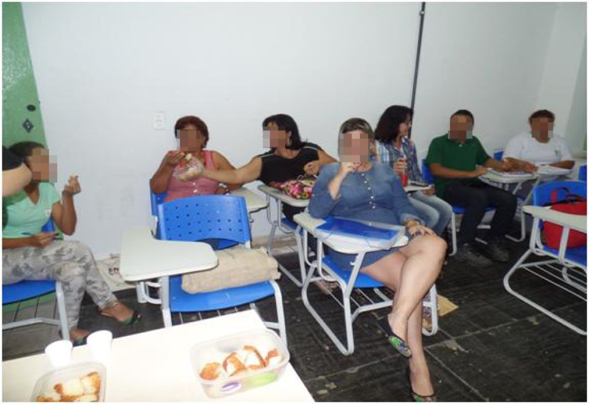
Imagem 1 - Momento de cafezinho e bolo de arroz da dona Inês Foto: Aline Rezende (2015).
Em um primeiro instante, foi servido aos alunos o bolo de arroz da Dona Inês, acompanhado de um café. Em seguida, foi apresentado o kit de fotos para realizar a oficina com jogo de memória, contendo 39 fotos do Mercado Municipal. O objetivo era que os participantes pudessem reviver suas memórias, contando experiências vividas naquele espaço. Nossa apresentação começou com um pouco de receio, mas logo tudo foi se encaixando, dando início a relatos e depoimentos dos alunos e professores com “causos” que seus antepassados narraram para eles durante a vida toda ou que estes viveram no Mercado. Vejam a foto abaixo, mostrando o momento em que todos se interessaram por ver os registros fotográficos.
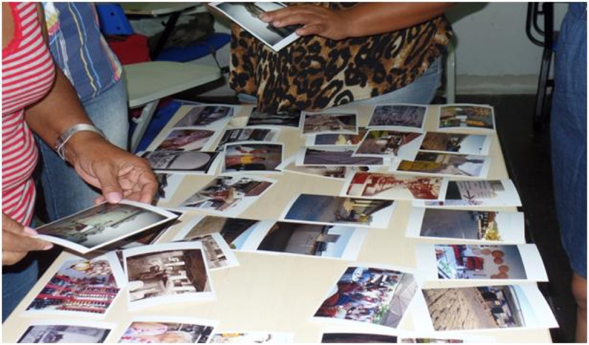
Imagem 2 - Fotos do Mercado (jogo da memória) Foto: Aline Rezende (2015).
Ao começar os depoimentos a professora Cristiane, muito emocionada, começou a relatar a história das memórias de seu sogro “Bastião de Ocro”, que veio ainda pequenino para a Cidade de Goiás com seus pais, a procura de uma vida melhor, vendendo suas terras em Minas Gerais e comprando aqui bem barato. De acordo com Silva (p. 56) apud Brandão (1978), um alqueire vendido em Minas Gerais equivalia a quatro aqui em Goiás. Cristiane afirma que essa viagem durou 40 dias de carroça, e seu primeiro ponto de parada aqui em Goiás foi no povoado do Rio Uru, onde ele foi andar na beira do rio porque achou bonito aquele local. O senhor Bastião de Ocre encontrou um par de botinas meio que enterrado na beira do rio e, ao puxar, percebeu que havia um defunto naquele local, ficando assim apavorado e não querendo ficar mais aqui na região porque, através deste fato, soube que aqui o povo de Caiado matava muito.
A família de Bastião continuou a viagem até chegar ao Ferreiro, onde compraram suas terras. Ele, dos 12 aos 18 anos, trabalhou nas lavouras de arroz, e como todos os jovens de sua idade, queria ir às festas, mas como era muito pobre não tinha jeito. Então, veio para a cidade vender o arroz que produziam na fazenda com seu pai e, com isso, encontrou o Mercado, onde todos os produtores de toda a região trocavam ou vendiam seus alimentos. No Mercado, ele encontrou um mascate, que vendia fumo de São Paulo, que lhe ofereceu pra trocar o arroz pelo fumo, mesmo com medo da bronca do pai, ele trocou porque queria o dinheiro. A professora Cristiane relata que;
30
Segundo ele, quando veio para cidade, o Mercado já existia, mas não tinha aquela composição que tem hoje, era um espaço onde todos os produtores rurais se dirigiam para trocar os alimentos, para vender ou para fazer algum tipo de comércio, mas o local não tinha ainda aquelas portinhas definidas, não estava organizado como Mercado, ainda era só um ponto de encontro. E ele chegou no Mercado, lugar de encontro para vender o arroz, que ele e o pai tinham colhido e era a única renda que possuiam.
Cristiane diz que o mascate orientou seu sogro a vender o fumo e arrecadar o dinheiro e assim ele fez. Então, começou a vender o rolo de fumo picado com o resto de arroz, levando o dinheiro. Na próxima semana voltou novamente e encontrou outro mascate, que propôs a ele pegar as panelas para vender. Seu negócio foi só por meio da conversa, não tinha nem um documento assinado. Então, a professora Cristiane conta que, nos relatos de seu sogro, ele dizia que tudo começou com um saco de arroz e um rolo de fumo, e se tornou um dos homens mais ricos da cidade.
Ainda pobre conheceu sua esposa e queria se casar com ela, só que ela não queria porque ele era pobre e não tinha nem uma casa. Aí, ele pegou um saco de arroz e um rolo de fumo e conversou com o pessoal, conseguindo uma portinha no Mercado, com isso vendeu todo o saco de farinha e comprou uma bicicleta circular, que era muito cobiçada naquela época. Depois disso, casou com a sua esposa, adquirindo assim vários bens. Este apelido, ‘’Bastião de ocre’’, era porque no Mercado havia vários Sebastiões e tinham que distinguir uns dos outros. Como seu sogro usava óculos, por causa da diabetes, ficou com esse apelido. No depoimento, a emoção tomou conta dela enquanto falava sobre o assunto Mercado. Disse ainda, no relato das memórias, que a vida de muitas pessoas começou ali, no espaço do Mercado.
No espaço do IFG, o jogo da memória reavivou a emoção de todos, fazendo com que se lembrassem dos antigos comerciantes e da forma como seus tios e avós contavam suas histórias sobre o Mercado Municipal, foi um momento agradável de discussão e boas lembranças. A aluna Núbia Regina, por exemplo, contou que o tio dela teve um açougue durante muitos anos naquele lugar, que foi passado de geração a geração até acabar tudo.
Alguns alunos do IFG são contra e outros a favor da restauração do Mercado Municipal. Muitos deles, como a Nubia Regina, disseram que;
Quando eu vejo uma parede perfeita, que foi feita de adobe, e mesmo com o tempo continua linda, maravilhosa e intacta, você não vê nem fissura, como as o Mercado, se for mexer, volta a mesma coisa que era antes, devolva aquilo que ela tinha, não misture o novo com o velho. O novo com o velho e o contraste da rodoviária com o Mercado. Qual a necessidade das pessoas estarem vindo fazer essas trocas para ter um ponto de entrada e de saída? A rodoviária faz parte dessa história, então a rodoviária não é velha, é nova, mas foi a necessidade que a construiu, então não tem que destruí-la. Quando olho para o Mercado e vejo que eles, às vezes, querem modificar algumas coisas velhas e acrescentar coisas novas e tirar o que existia, me machuca muito porque eu amo aqui.
31
E segue a aula com os relatos. A aluna Nubia é uma apaixonada pelo centro histórico. Segundo ela, sua família foi toda criada neste espaço. Emocionada, ela fala que não concorda com o projeto de restauração do Mercado, pois isso vai tirar daquele espaço sua identidade e a das pessoas que dali tiram o sustento de suas famílias ou das pessoas que vão visitar o local. Nubia é totalmente contra a restauração do Mercado, segundo ela, o lugar deveria ser só reformado e manter o prédio do mesmo jeito, inclusive sem retirar a rodoviária. Para ela, a beleza vai ser destruída, aquele encanto que os moradores têm por aquele local vai diminuir.
No meio da discussão, a professora Cristiane pega uma foto com várias placas e lembra-se do sogro, que contava que lá era um local público, que recebia pessoas de várias classes sociais, sem distinção, que estavam livres de poder político. Disse ainda que tem vários amigos que falam: “se eu for em Goiás e não for ao Mercado eu não fui em Goiás’’. Emocionada, a professora faz a reflexão sobre o bolo de arroz, o suco de cajazinho, dizendo que o espaço é rico em vivência e que a memória dos visitantes é prazerosa, lembrando de coisas agradáveis. Isto é herança e cultura para ser transmitidas a todos, mesmo com o Mercado todo sujo. Será que quando reformar como vai ficar a questão, “é possível trazer o novo sem esquecer o passado, é possível transmitir esse passado modificando ele um pouquinho pra atender as necessidades atuais? Eu acredito que sim’’.
A professora Edneia questionou o fato de que o projeto visa atender às necessidades daquele espaço e que a verdadeira vocação dele hoje é atender ao turista, a troca, ou a população, pois na pastelaria do Macalé vende o jornal Daqui e eles anotam ainda na cadernetinha e ligam para avisar que pegou, isso é uma relação de troca. Para ela, esse momento de obra é de decisão e a opção de levar a turma do restauro lá foi para mostrar a todos que é um desafio a cada dia a toda a equipe. Lá estão tendo descobertas todos os dias. Ela nos conta que “o piso antigo me parece que está intacto’, esse piso foi descoberto agora, mas não sabem se vai manter ou não; numa obra cada dia acontece um fato novo, por isso a importância de fazer um acompanhamento contínuo”.
A aluna Maria das Dores também conta que quando criança comprava muitas frutas e verduras no Mercado, e que tinha muito medo dos “loucos’’ que existiam no local. Sendo assim, a turma se manifestou afirmando que “até hoje ainda têm muitas pessoas com deficiência, um espaço em que sãos e dementes estavam lá’, que enquanto os estabelecimentos estivessem abertos eles ficavam lá”.
A dona Diva nos agraciou com uma história muito interessante também. Ela contou que quando era pequena, junto com seu irmão, iam ao Mercado, a pedido da mãe, pegar osso para fazer geleia para comerem. Eram muito pobres. O osso ficava limpinho e com ele a mãe fazia sabão para eles venderem na cidade. Afirma também que no Mercado se lançava moda e as moças de família não podiam ir lá. A história da dona Diva retrata a pobreza, que retirava seu sustendo através do Mercado, além de aproveitar o osso para retirar o mocotó e fazer geleia, além de vender o restante que sobrava em forma de sabão.
32
A Nilzmone afirma que todo mundo vai ao Mercado para comer, se reunir, e que antes este local era um ponto de troca, agora é só comércio. E o pai dela sempre teve uma borracharia no Mercado Municipal e que neste lugar se faz muita amizade. Ela acha uma pena a enchente de 2001 ter levado tantos comércios, causando grandes prejuízos e, com isto, foram retirados todos os pontos de comércios e as casas da beira do rio para se evitar uma nova enchente.
Na turma do curso de restauro, como já dissemos, as opiniões são divididas em relação à restauração do espaço do Mercado Municipal, alguns acham que deve demolir a rodoviária velha, para que este espaço volte ao original e outros não concordam. A professora Cristiane diz que as mudanças são necessárias para adaptar a nova geração, afirmando que, se pegarmos qualquer criança e mostrar o mercado hoje e o projeto de restauração, ela vai escolher o novo projeto, afirma ainda que o Mercado seja uma memória viva e isso não vai se apagar da vida das pessoas que ali frequentam.
O que vai diferenciar a nossa memória e dos nossos moradores é aquilo que a gente quer guardar, a gente não quer guardar o físico, quer guardar valores, que ninguém pode tocar e a gente só guarda através da educação, principalmente da educação patrimonial, a partir do momento que a gente passa para nossos filhos, para as novas gerações o valor do passado e o que é o passado e a construção do presente. Estamos dessa maneira, nesse momento, porque tivemos no passado esse momento, esse histórico....o olhar do indivíduo pra isso. Se ele não entender de valores vai querer o novo sempre. (Cristiane, 2015).
O jogo da memória no IFG fez com que todos os alunos participassem da aula. Foi um momento muito agradável para todos nós, o tema Mercado trouxe a emoção a grande parte dos alunos, fazendo a maioria deles relembrar de muitos dos seus antepassados e de tudo que eles viveram neste espaço.
Imagem 4 - Foto com a turma do IFG Foto: Professora Renata (2015). (coordenadora do curso técnico de restauro).
Intervenção no Conviver
Com os idosos do Conviver, o projeto foi executado em uma manhã do dia 17 de junho de 2015, quando estava acontecendo um evento, cujo tema era “A cidade de Goiás mobiliza-se por mais respeito, qualidade de vida, dignidade e esperança para as pessoas idosas’’, realizado pela prefeitura de Goiás, Secretaria Municipal de Goiás, Secretaria Municipal de Saúde, CRAS, Pastoral do Idoso, Secretaria Municipal de Assistência Social Trabalho e Educação. Em parceria com este projeto, foi realizado um momento nosso com os idosos do Conviver, juntamente com a coordenadora desse órgão, a senhora Iolanda. Ela e sua equipe prepararam, inicialmente, um momento para recepcionar os idosos na porta da prefeitura municipal da Cidade de Goiás, a partir das 8 horas, com diversas falas sobre o tema e a participação de várias autoridades, inclusive a prefeita Selma Bastos.
Logo após, teve um reforçado café da manhã e, em seguida, o alongamento com os idosos, para que estes começassem a sua caminhada passando pelo Mercado Municipal e indo até a praça de eventos.
Na praça de eventos, foram colocadas várias equipes para orientar e vacinar os idosos. Aproveitando esse evento, foi levado o kit de fotos à mesa dos idosos, contendo 39 fotos do Mercado Municipal. Ao apresentar estas fotos, foram fluindo os relatos, o primeiro depoimento foi o de Frei Marcos Lacerda. Ele lembra que quando era criança, entre os anos de 1940 a 1944, vendia biscoito e pão de queijo no Mercado Municipal, junto com seu primo, afirma ter visto várias pessoas chegarem com os seus cargueiros para vender seus produtos e que ali havia um pátio para amarrar os cavalos e capim para alimentar os animais. Frei Marcos é a favor da restauração e afirma que depois disso lá vai ficar muito bonito.
No entanto, João de Souza afirma que Goiás, sendo uma cidade patrimônio histórico, não se deve mexer no Mercado e nem retirar a rodoviária velha daquele espaço, pois daqui uns dias a cidade estará toda modificada. Ele conhece o Mercado desde antes da construção da rodoviária, mas afirma que ela está muito bem localizada. Ele sempre foi a este local para um bate papo com os amigos, é seu espaço de vivência desde a infância.
Seguindo com o kit, Ivani Rodrigues lembra que o Mercado era bem diferente do que é hoje. Olhando uma foto, ela afirma que se lembra dos tropeiros que traziam alimentos para vender neste espaço, e que antigamente lá era um local de convivência, que todos os tropeiros eram amigos, lembrando ainda que naquela época tudo que sua família comprava de alimentos era no Mercado, e este tinha que voltar ao original, mas a sociedade modificou tudo e ainda quer modificar mais ainda com essa intervenção. Para ela, a intervenção deveria realizar apenas uma reforma neste espaço, preservando a mesma estrutura original, que é muito bonita, só falta um pouco de cuidado.
Adelice, com seus 75 anos, pega uma foto, emocionada, e afirma que nos anos de 1953 a 1954, com apenas 9 anos de idade, ia ao Mercado com seus pais distribuir alimentos nas bancas, e que esses produtos eram trazidos nos cargueiros. Ela não concorda com a intervenção, afirma que teria que restaurar a fachada principal, retirando a rodoviária e deixando como era antes, diz que com aquela foto relembra de todos os momentos que ali viveu com seus pais, afirmando que sente muita saudade daquela época porque ali, juntamente com eles, levou muitos produtos alimentícios para os barracões do Mercado. Inclusive, em um trecho de seu depoimento, ela afirma que o Mercado “era maravilhoso, era belo, deu saudade demais da conta, muita saudade”, relembrando tudo que viveu naquele espaço.
Segundo Oriá (1999, p.1), a educação patrimonial se baseia na memória para conscientizar a se preservar:
A educação patrimonial se utiliza dos lugares e suportes da memória (museus, monumentos históricos, arquivos, bibliotecas, sítios históricos, vestígios arqueológicos, etc.) no processo educativo, a fim de desenvolver a sensibilidade e a consciência dos educandos e dos cidadãos para a importância da preservação desses bens culturais.
Cláudio Leite, hoje aos 65 anos, diz que o Mercado foi criado para os produtores rurais venderem seus produtos e, inclusive, seu pai trazia vários tipos de alimentos, como carne, verduras e outros para esses comércios. O Mercado também era um local em que as pessoas vinham para tomar seu café todos os dias e hoje, com a restauração, isso vai acabar, pois as pessoas não vão mais se identificar com as mudanças, que ali esta riqueza está sendo feita, este local precisava de alguém para reavivar a sua verdadeira função. Afirma que “o Mercado é onde vende e troca mercadoria e ali não tem mais isso”. Segundo ele, isso deveria voltar a acontecer neste espaço.
O Mercado adquiriu sua própria identidade com o passar dos anos, e seus frequentadores, com ele, passaram a ter sua própria cultura e identidade.
E somente quando se conhece os elementos que compõem a riqueza e diversidade cultural de cada comunidade, qual a sua origem e de que forma contribui para a formação da identidade nacional, é que se torna possível o respeito a essa diversidade e à multiplicidade de expressões e formas com que a cultura se manifesta nas diferentes regiões, a começar pela linguagem, hábitos e costumes (JUNQUEIRA, Ivanilda p. 10).
2- INTERVENÇÃO NA ESCOLA MUNICIPAL OS PEQUENINOS
No dia 19 de junho de 2015 foi a vez de levar o kit de fotos do Mercado à Escola Municipal Os Pequeninos, na sala do 5° ano, com cerca de 20 alunos, com idade entre 10 e 12 anos. A professora Juliane recebeu o projeto com muito entusiasmo, afirmando que seria muito bom para enriquecer os conhecimentos deles. O autor Fernandes (1995, p. 46), ao falar da importância de ensinar o aluno sua vivência, afirma que:
O ensino de História local vem, de certa forma, romper com esta visão tradicional em que se priorizava o estudo da chamada ‘’História Geral da Civilização Brasileira’’, na tentativa de se passar para nossos alunos a ideia de um Brasil homogêneo, sem diferenças, conflitos e contradições sociais e um passado unívoco a ser ‘’decorado’’ e utilizado apenas nos exames e arguições. Queremos, pois uma História que resgate as peculiaridades e especificidades regionais e dê conta da pluralidade étnico-cultural de nossa formação histórica.
Ao iniciar a intervenção houve uma narrativa sobre a história do Mercado e sua importância. Depois, foi questionado aos alunos se algum deles conhecia o Mercado ou se já tinham ouvido alguma história sobre ele. Não manifestaram nenhum conhecimento sobre o local e, com isso, começou-se a passar as fotos de carteira a carteira; logo começaram a lembrar de alguma coisa sobre o Mercado, principalmente das guloseimas, como o bolo de arroz da Dona Inês e o pastel do Macalé, e da rodoviária, que foi o local que praticamente todos lembraram.
Em seguida a esta discussão foi proposto para eles desenharem aquilo que mais lhes chamou a atenção no espaço Mercado, ou aquilo que já foram lá fazer em seu dia a dia ou, até mesmo, uma história que já ouviram de seus pais.
Se tradicionalmente ela foi utilizada como uma referência à “herança paterna” ou aos “bens familiares” que eram transmitidos de pais (e mães) para filhos (e filhas), particularmente no que se referia aos bens de valor econômico e afetivo. (CHAVES, 2007, p.20)
35
Com suas memórias acesas, as crianças logo começaram a esboçar seus desenhos sobre tudo que conheciam no Mercado Municipal. A educação patrimonial foi se realizando ali, ao incentivar os alunos a voltar à sua memória diária. Para Oriá (1999, p.1),
A educação patrimonial nada mais é do que uma proposta interdisciplinar de ensino voltada para questões atinentes ao patrimônio cultural. Compreende desde a inclusão, nos currículos escolares de todos os níveis de ensino, de temáticas ou de conteúdos programáticos que versem sobre o conhecimento e a conservação do patrimônio histórico, até a realização de cursos de aperfeiçoamento e extensão para os educadores e a comunidade em geral, a fim de lhes propiciar informações acerca do acervo cultural, de forma a habilitá-los a despertar, nos educandos e na sociedade, o senso de preservação da memória histórica e o consequente interesse pelo tema.
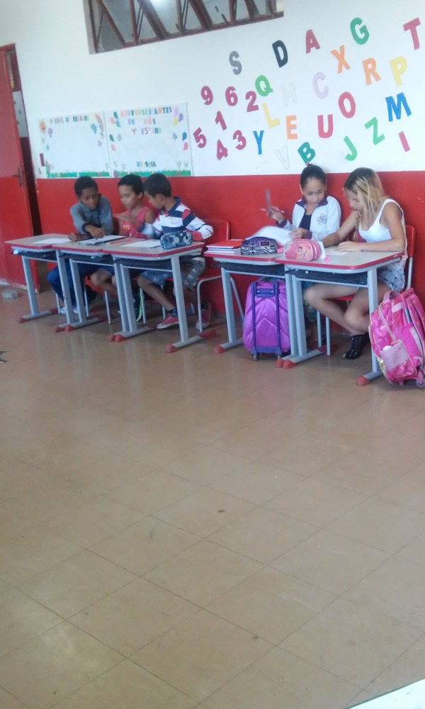
Imagem 10 - Turma do 5° ano da Escola Municipal Os Pequeninos Foto: Professora Juliane (2015).
Ao começar a desenhar, os alunos ficaram empolgados com aquele momento e retrataram coisas lindas, como a paisagem, a fachada, o bolo de arroz, o pastel vendido lá, as bancas de verduras, o artesanato. Até o coletivo, que é o meio de transporte que a maioria utiliza, foi lembrado nos desenhos. Quanto à intervenção, as crianças apoiaram a restauração afirmando que vai ficar mais bonito aquele local, porque agora é muito feio e sujo.
Abaixo estão alguns desenhos criados pelos alunos da Escola Municipal Os Pequeninos, retratando aquilo que mais lhes interessa no Mercado.
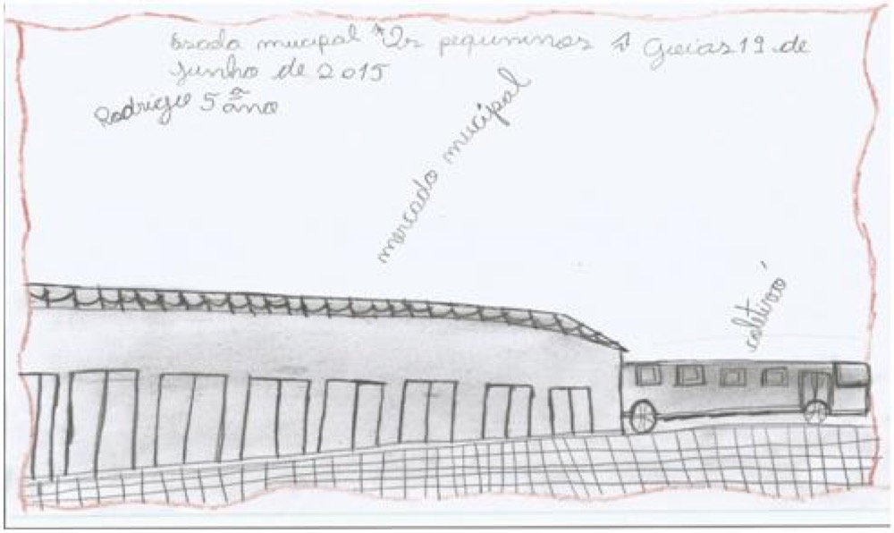
Imagem 11 - Desenhos dos alunos
O aluno Rodrigo desenha uma parte da nova construção que, segundo ele, ficou muito bonito e, ao fundo, o coletivo que costuma pegar com frequência neste local.
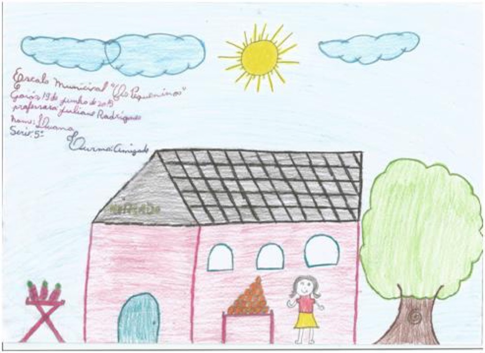
Imagem 12 – Desenhos dos alunos
Neste, a aluna Luana retrata a banca da Lena e as frutas vendidas neste espaço; segundo ela; sua mãe vai diariamente neste local.
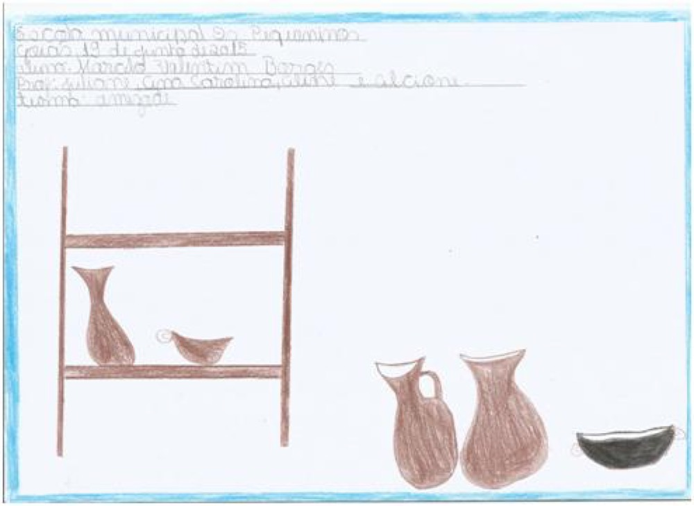
Imagem 13 – Desenhos dos alunos
Já o Marcelo se lembrou do artesanato que é vendido nas lojas de artesanato do Mercado Municipal. Para ele, são os produtos mais bonitos vendidos ali.
Conclusão
A intervenção foi um momento prazeroso em todos os locais em que foi executada, e trouxe a realidade do verdadeiro público que frequenta este local. Com isto, chega-se a conclusão de que o Mercado faz parte da história de vida da maioria da população vilaboense. Ao ouvir o relato de vida de todas aquelas pessoas vi a emoção no rosto de cada uma, o amor que elas têm com o espaço Mercado.
O kit de fotos fez com que se lembrassem dos seus antepassados mais próximos. O assunto Mercado fez com que as pessoas revivessem e voltassem ao passado lembrando-se de uma época que era de troca nesse espaço e que realizaram muitas coisas prazerosas, não somente com suas famílias, mas com amigos. Gente que reviveu histórias que seus antepassados contaram e deram depoimentos emocionantes, como se estivessem vivendo aquela época em que os tropeiros ficavam no pátio do Mercado para distribuir seus alimentos para os barracões.
Santos (1998, p.66) afirma que “a cultura tem suas raízes na terra em que vive, simboliza o homem e seu entorno a vontade de enfrentar o futuro e sem romper a continuidade. Seu quadro e seu limite são as relações profundas que tecem entre o homem e o meio’’. O Mercado Municipal, sendo uma paisagem cultural, teve sua estrutura modificada pelo homem a fim de adaptá-la às necessidades do ser humano, que a cada traço cultural insere uma mudança neste ambiente. Temos no Mercado uma cultura inserida sobre o que sobrou da outra cultura, daí então este ciclo de desenvolvimento cultural que nasce através da paisagem natural ou cultural.
36
A intervenção foi um momento íntimo, em que os momentos de observação deste espaço durante muitos anos vieram a se realizar. Como local de grandes encontros de amigos, o Mercado vai ficar na memória de todos que o conhecem, nas fotos, nos vídeos e, principalmente, no coração de cada um que lá foi, mesmo que tenha só passado por lá. Santos, sobre o cotidiano, afirma:
A cotidianidade caracteriza-se por uma comunhão entre sociedade que se organiza e cada qual, cidadão/membro desta comunidade, é um agente transformador. No lugar – um cotidiano compartido entre as mais diversas pessoas, firmas e instituições – cooperação e conflito são a base da vida em comum. Porque cada qual exerce uma ação própria, a vida social se individualiza, e porque a contiguidade é criadora de comunhão, a política se territorializa, com o confronto entre organização e espontaneidade. O lugar é o quadro de uma referência pragmática ao mundo do que vêm solicitações e ordens precisas de ações condicionadas, mas também o teatro insubstituível das paixões humanas, responsáveis, através das manifestações da espontaneidade e da criatividade. (2008. p. 322)
REFERÊNCIAS
CHAGAS, Mario. Casas e portas da memória e do patrimônio. Em questão: revista da Faculdade de Biblioteconomia e Comunicação da UFRGS, Porto Alegre, v. 13, n. 2, p. 207-224, 2007.
JUNQUEIRA, Ivanilda. Educação patrimonial: recursos, técnicas e estratégias.Material didático da Especialização Interdisciplinar em Patrimônio, Direitos Culturais e Cidadania. CD. Goiânia: UFG - CIAR, 2014.
SANTOS, Milton. A natureza do espaço: técnica e tempo, razão e emoção. 4 ed. São Paulo: Editora da Universidade de São Paulo, 2008.
SILVA, Rusvênia Luiza Batista Rodrigues. Sobre o camponês do sertão: produção do espaço identidade camponesa em assentamento do município de Goiás–GO. Disponível em: <http://www.mstemdados.org/sites/default/files/ 2003%20silva_rlbr_me_ prud. pdf>. Acesso em: 14 jul. 2015.
Orientadora Acadêmica: Lucinete Aparecida de Morais
Coordenadora de orientação: Ivanilda Aparecida Andrade Junqueira
INTRODUÇÃO
Fundada em 1726, a Cidade de Goiás recebe no ano de 2001 o título de Patrimônio Histórico da Humanidade, concedido pela Organização das Nações Unidas para a Educação, a Cultura e a Ciência (UNESCO) pela arquitetura vernácula preservada, presente na bela paisagem do centro histórico e acervo cultural. O Mercado Municipal, situado no centro histórico da Cidade de Goiás, foi criado pela Intendência Municipal da Capital de Goyaz, que fazia um contrato de locação com as pessoas interessadas em vender seus produtos naquele local. Fundado em 1926, não possuía água encanada, rede de esgoto e tinha somente algumas salas comerciais para a venda de suplementos e produtos de primeira necessidade, autorizados através de um decreto criado pela província da Cidade de Goiás, no ano de 1869.
Um grande galpão, abrigando boxes que se abrem para uma varanda em arcos, fachada com elementos da arquitetura neoclássica, com lindas colunas, possui vários comércios, principalmente na área de alimentação, sendo os comerciantes fiscalizados diariamente por um administrador e seus subordinados. Este lugar guarda a memória da minha família como de tantas outras famílias, que ali viam uma forma de trabalho para sua manutenção.
Falo com certo carinho deste local tão especial. Desde pequena sempre escutava minha mãe contar com saudade da vida difícil, no entanto feliz. Acordar às quatro da manhã para fazer bolo de arroz para vender no Mercado, em um ponto comercial que pertencia a minha avó. Enquanto minha avó vendia bolo de arroz com café passado na hora, minha mãe vendia puxa antes da escola para, depois da aula, ajudar minha avó a lavar roupa no Rio Vermelho para ajudar nas despesas, enquanto minhas tias ficavam no “boteco” vendendo bolo.
Cresci neste local, sempre ajudando minha tia e o esposo, onde adquiriram um ponto comercial no qual vendiam brinquedos, coisas de pesca e faziam chave; era um mundo de sonhos para mim, tantos brinquedos diferentes. Ali ganhei o meu primeiro dinheiro, ajudando no grande movimento próximo ao dia das mães. O primeiro presente para ela comprado com meu dinheiro, com o meu trabalho. Lembrança feliz da minha infância e do cuidado que a minha mãe tem até hoje com aquele singelo presente. Estas são lembranças que guardo comigo como um tesouro muito valioso e que revivo sempre quando falo deste lugar tão importante em minha vida.
Hoje o Mercado é preservado na mesma edificação e faz parte dos prédios tombados pelo Instituto do Patrimônio Histórico e Artístico Nacional (IPHAN), mas já passou por várias alterações ao longo dos anos. Local de extrema importância para os encontros habituais dos moradores e comerciantes, o Mercado necessita de uma administração que cuide e preserve as belezas que compõem a paisagem local. O poder público precisa investir no desenvolvimento da consciência das pessoas da Cidade de Goiás para que elas possam usufruir do Mercado e valorizar esse ponto de referência tão importante no centro histórico de Goiás e que precisa ser cuidado e preservado para ser não apenas um “cartão postal” admirável, mas sim um lugar que faça parte da vida e memória da população.
38
O projeto de intervenção foi direcionado para a valorização e preservação do patrimônio, aproximação da cultura e desenvolvimento da cidadania, com participação das alunas Alcione Francisca Marques, Aline de Oliveira Rezende e Ana Carolina Ferreira de Faria, do Curso de Especialização Interdisciplinar em Patrimônio, Direitos Culturais e Cidadania, na modalidade a distância, pela Universidade Federal de Goiás. A intervenção foi realizada com três diferentes públicos: no curso técnico integrado em Conservação e Restauro, na modalidade Jovens e Adultos (EJA), no Instituto Federal de Goiás; no I Encontro de Enfrentamento à Violência contra a Pessoa Idosa por meio da Secretaria Municipal de Assistência Social, Trabalho e Habitação e do Conselho Municipal do Direito do Idoso, com idosos do “Conviver”; e com os alunos do 5º ano da Escola Municipal “Os Pequeninos”, no mês de junho de 2015, com intenção de agregar conhecimento através das vivências, valorizar o sentimento de identidade e pertencimento e passar para os alunos a importância da preservação da cultura e memória.
O objetivo foi levar tudo que foi estudado na especialização para campo e desenvolver um trabalho de educação patrimonial, cultura e cidadania através da vivência, memória e identidade.
DESENVOLVIMENTO
O Mercado Municipal é um lugar que guarda memórias importantes de pessoas humildes, que ali escreveram sua história através da luta diária de trabalho nesse local, onde muitas pessoas passaram e hoje olham para trás com saudade da simplicidade e das amizades. Espaço conhecido pelo bolo de arroz tão famoso da dona Inês, do pastel de carne com gueiroba, do empadão goiano, do cafezinho com uma boa prosa na lanchonete do Macalé. As amizades, freguesia e causos de pessoas que não deixam nada esquecido no tempo.
A cultura, no seu amplo sentido etnográfico, é um complexo que
Inclui conhecimentos, crenças, arte, moral, leis, costumes, ou
qualquer outra capacidade ou hábitos adquiridos pelo homem como membro de uma sociedade. (TYLOR, 1871).
O levantamento da história do mercado foi algo maravilhoso de estudar e aprender, as experiências são fascinantes. Os depoimentos acrescentaram uma nova visão de um lugar que era tão conhecido e que hoje ficou mais especial, mais completo.
Objetivo geral
Buscar unir as facetas que levem as interfaces do patrimônio cultural por meio da participação da comunidade no que diz respeito ao assunto patrimônio e levar a educação patrimonial aos parâmetros educacionais de forma mais homogênea e realista.
Objetivos específicos
Apresentar cotidianamente a paisagem histórica e cultural do Mercado.
Descobrir o significado do Mercado para os comerciantes e moradores
Aprender e entender a importância histórica do Mercado, e a sua relevância na cultura local.
Questionar o que os comerciantes em geral e a população local acham da reforma do Mercado Municipal. Isso pode fazer com que se percam os fatores históricos e culturais impregnados neste espaço?
METODOLOGIA
No dia 15 de junho de 2015 executamos o projeto de intervenção “O Mercado Municipal e Cidadania Patrimonial” no curso técnico integrado em Conservação e Restauro, na modalidade Jovens e Adultos (EJA), do Instituto Federal de Goiás. A atividade começou com uma breve apresentação da história do Mercado para os alunos e, em seguida, utilizamos o kit de fotos do Mercado com intenção de que cada um pudesse identificar-se com uma delas e relatar, em forma de texto, o que sente pele Mercado. A apresentação do kit de fotos despertou lembranças e sentimentos, a interação aconteceu facilmente, aos poucos, todos participaram e se abriram na dinâmica de grupo. A surpresa foi que uma das professoras do curso foi aquele dia para dar o seu depoimento sobre o significado do Mercado Municipal para ela e sua família.
39
Apresentação do kit de fotos do Mercado Municipal
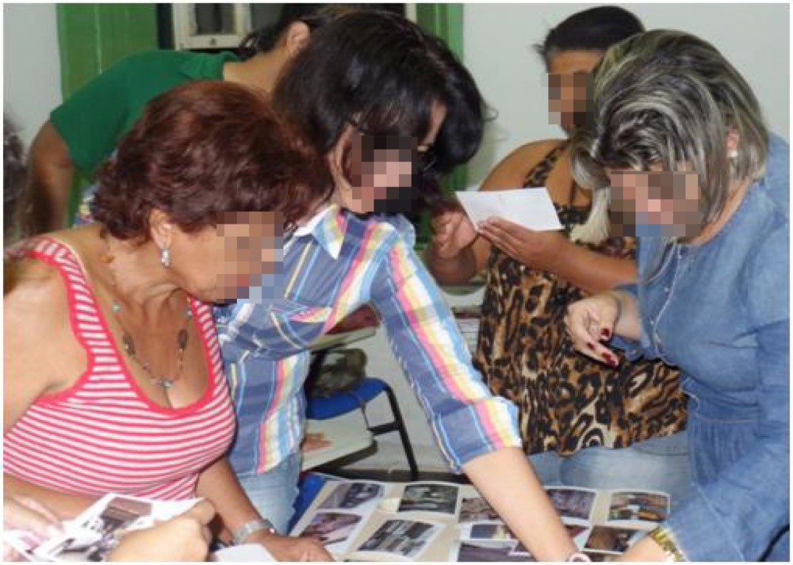
Imagem 1 - Alunos do curso técnico integrado em Conservação e Restauro do Instituto Federal de Goiás, Cidade de Goiás, 2015. Foto: Aline de Oliveira Rezende.
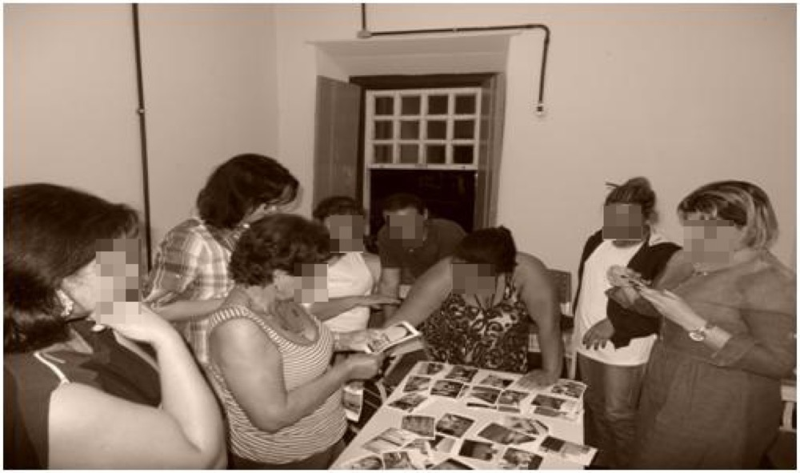
Imagem 2 - Alunos do curso técnico integrado em Conservação e Restauro do Instituto Federal de Goiás, Cidade de Goiás, 2015. Foto: Aline de Oliveira Rezende.
Depois do reconhecimento, o primeiro depoimento foi o da professora Cristiane, que disse:
O único sustento que meu sogro tinha era a plantação de arroz, e com 18 anos, dos 12 aos 18 anos ele trabalhou na roça com o pai. Aos 18 anos, ele era um rapazinho que gostava de ir para os forrós que tinham lá no Ferreiro, nas fazendas vizinhas, e sempre queria namorar, mas se sentia envergonhado porque não tinha um trabalho, só na roça, era muito pobre né! Aí ele falou assim: “quer saber vou pra cidade. Não vou ficar aqui na roça mais não, vou pra ver o que faço pra fazer a minha vida”. E ele veio para cidade ver o que poderia fazer aqui. Segundo ele, quando chegou aqui, o Mercado já existia e não tinha aquela composição que tem hoje. Era um espaço onde todos os produtores rurais se dirigiam para trocar os alimentos ou para vender ou para fazer algum tipo de comércio com esses produtos. Mas não tinha ainda aquelas portinhas definidas, ainda não não estava organizado ainda como se fosse o Mercado, era um ponto de encontro. E ele chegou nesse lugar no Mercado, que era ponto de encontro para vender o arroz que ele e o pai tinham plantado e era a única renda que ele tinha. Quando eles chegaram lá para plantar, para vender esse arroz, sentou com as sacas de arroz do lado para ver, para fazer a troca. Então, ele trocava por fumo para o pai, trocava por sabão, trocava por outras coisas. Trocava por frango, por ovos, por farinha. E nisso veio um mascate que vendia fumo, vindo de São Paulo. A pessoa que vendia fumo de São Paulo também passava lá para deixar. Aí o mascate falou para ele assim: “escuta, vamos trocar esse arroz num fumo?”. Aí ele respondeu assim: “mas meu pai precisa desse dinheiro, preciso vender. Não posso trocar não!”. O mascate disse: “eu te dou um pouco de fumo, daí você vende e repassa o dinheiro para o seu pai, e eu levo o arroz. Meu sogro disse assim: “uai, é uma boa ideia, eu vou fazer isso”. Ele disse que pegou um rolo de fumo em troca de uma saca de arroz e botou esse rolo de fumo em cima do arroz que tinha ficado. Ele disse que olhava e falava: “e agora o que eu vou fazer com isso? Eu vou chegar lá agora e meu pai vai me bater, e esse fumo aqui? Quer saber eu vou vender!”. Ele disse que pegou o fumo e começou a oferecer para as pessoas que passavam, que estava caminhando lá, para os moradores. Ele conseguiu vender o fumo, tirar o dinheiro de volta e entregar para o pai. Na outra semana, ele voltou para vender o arroz. Chegou lá, passou por um mascate vendendo panelas. Daí ele falou assim: “eu vou pegar essas panelas!”. O mascate falou: “então eu levo um pouco de arroz e te deixo umas panela e você vende, na volta... posso confiar em você que na volta...”. Para você ver que nessa época podia fazer qualquer coisa, qualquer tipo de negócio só com a fala, a fala tinha valor. Falou: “pode confiar, você pode deixar essas panelas aqui!”. “Então eu vou deixar as panelas para você vender, tá!”. E vendeu. Ele conseguiu vender as panelas. Então ele fala que começou com um rolo de fumo e um saco de arroz a vida dele. Ele foi um dos homens mais ricos aqui de Goiás. Daí ele quebrou, foi embora e ficou doente. Mas conseguiu muito dinheiro.
40
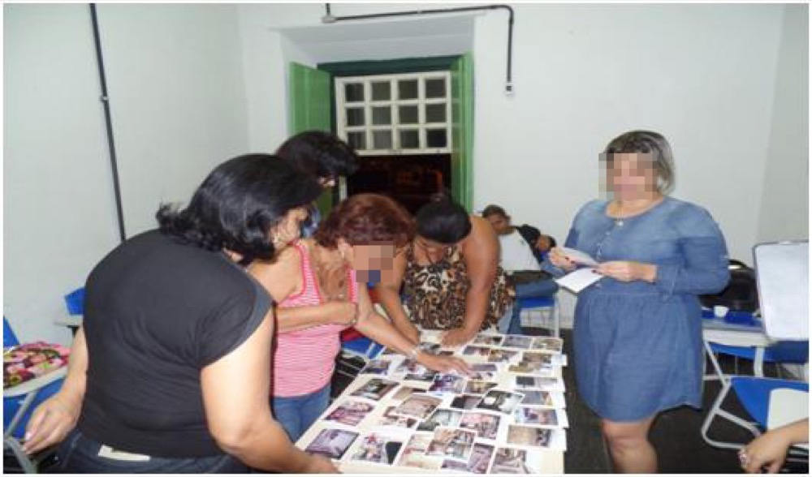
Imagem 3 - Alunos com a professora Cristiane, do curso técnico integrado em Conservação e Restauro do Instituto Federal de Goiás, Cidade de Goiás, 2015. Foto: Aline de Oliveira Rezende.
Quando vejo vocês buscarem os relatos, as memórias, fico muito feliz. Porque muito da nossa cultura daqui de Goiás, muito da nossa herança cultural, nascem justamente dentro do espaço do Mercado. Que era o lugar onde aconteciam as relações das pessoas que moravam aqui com as que vinham de fora. Era o primeiro lugar que quem chegava procurava para receber informações, fazer negócios. Então o trabalho que vocês estão fazendo é muito importante! E eu fico muito feliz de participar dele. (Cristiane, 2015).
No fim do depoimento da professora Cristiane, aparece uma nova fala. A aluna Nubia Regina começa a relatar suas lembranças e nelas pode se observar com clareza, características presente na fala de Maria Cecília Londres Fonseca;
Considero que uma política de preservação do patrimônio abrange necessariamente um âmbito maior que o de um conjunto de atividades visando à proteção de bens. É imprescindível ir além e questionar o processo de produção desse universo que constitui um patrimônio, os critérios que regem a seleção de bens e justificam sua proteção; identificar os atores envolvidos nesse processo e os objetivos que alegam para legitimar o seu trabalho; definir a posição do Estado relativamente a essa prática social; e investigar o grau de envolvimento da sociedade. Trata‐se de uma dimensão menos visível, mas nem por isso menos significativa, das políticas de preservação. (FONSECA, Maria Cecília Londres, 2005).
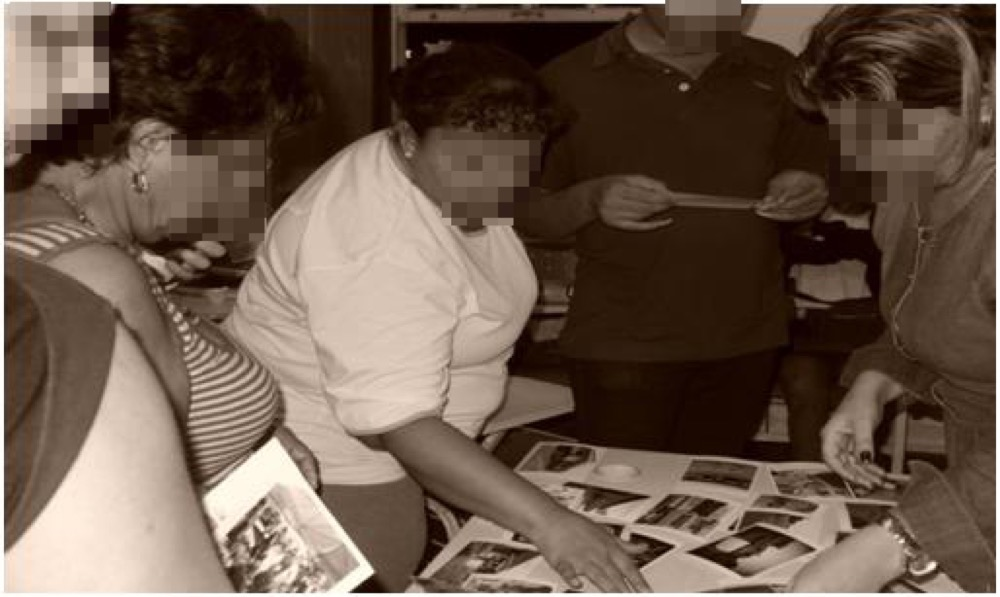
Imagem 4 - Alunos do curso técnico integrado em Conservação e Restauro do Instituto Federal de Goiás, Cidade de Goiás, 2015. Foto: Aline de Oliveira Rezende.
O primeiro aqui era do meu tio, eu lembro desse jeito aqui. Meu nome é Nubia. Essa parte aqui, eu me lembro quando tinha meus 8 anos, morava do outro lado do rio, na Rua Ernestina, e meu tio tinha o açougue aqui, no começo daqui para cá é muito conhecido. Brancão, todo mundo conhece ele lá, por que foi anos, anos e anos. Acredito que a vida financeira dele sempre tirou foi daqui, nessa época. Agora meu tio já não tem mais, ele saiu e entrou outro tio meu que saiu do exército, onde já era tenente. Veio mexer com ouro, mas não deu certo. Daí ficou no lugar do meu tio para sobreviver e hoje ele mexe com agropecuária. (Nubia Regina, 2015).
... e expõe de maneira bem clara a importância do Mercado em sua vida, na história de sua família, o que ela acha das alterações sofridas ao longo dos anos e, principalmente, seu ponto de vista sobre a atual reforma do Mercado.
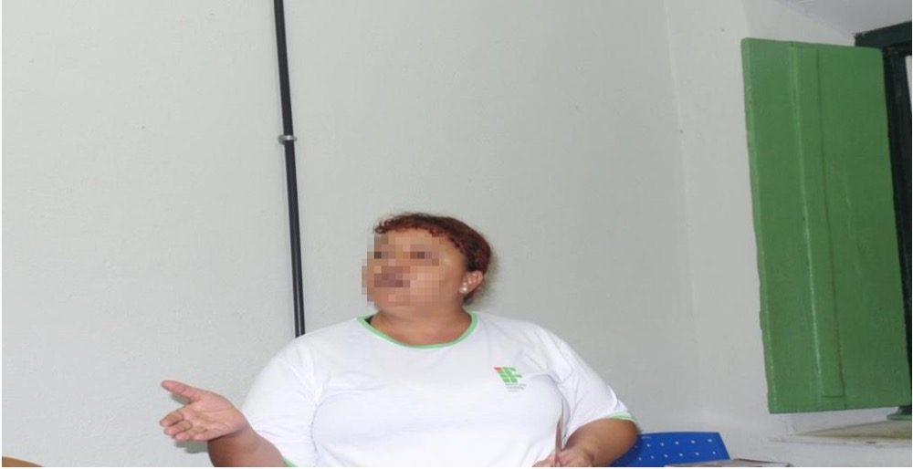
Imagem 5 - Aluna Nubia Regina do curso técnico integrado em Conservação e Restauro do Instituto Federal de Goiás, Cidade de Goiás, 2015. Foto: Aline de Oliveira Rezende.41
Hoje eu olho o Mercado, por mais que eu entenda e que os professores expliquem com os teólogos, cada um tem uma teoria, e a que eu mais amo, na verdade, é a de Ruskin, só que ele ainda foge um pouquinho. Não penso igual Ruskin, mas é mais ou menos parecido com ele. Porque quando olho no mercado, eu tenho uma visão diferente do que eu estou aprendendo aqui. Quando vi pela primeira vez a parede mexida, bati fotos para guardar para o futuro. Tinha uma noção de restauro totalmente diferente. Porque quando vejo uma parede perfeita, que foi feita de adobe, que mesmo com o tempo ela continua linda maravilhosa, intacta, você não vê nem fissura e uma parede onde as pessoas puseram as mãos, que colocaram tijolos, misturados com adobe, corta meu coração. Porque é mais fácil eu enxergar com a tinta, sem olhar o que tá no fundo, do que eu, que sou apaixonada em tudo que tem aqui dentro da cidade, ver aquele modificado e a professora fica tentando me explicar, sabe? Que é assim, mas eu pensava que quando você vai mexer em restauração, como o Mercado ou até uma igreja, qualquer coisa do patrimônio tombado aqui, eu pensava, é mais delicado ainda. Se você mexer mais volte a mesma estrutura, sei que é mais trabalhoso. É mais barato o material, claro! Acredito que sim! Mas a mão de obra é mais cara, por quê? Porque para fazer um adobe hoje, vai dar trabalho, o tempo vai ser mais longo, mas acredito se você vai mexer, devolva para aquela parede aquela vida, devolva aquilo que ela tinha e não põe material novo, não misture o novo com o velho. O velho, o novo com o velho é o contrário da rodoviária com o Mercado, porque com a necessidade das pessoas tá vindo nessas trocas, tinha que ter um ponto de entrada e um ponto de saída. A rodoviária faz parte dessa história. Ela é velha, mas bem mais nova que o Mercado, mas foi a necessidade de ter ela, então as duas coisas estão muito juntas. Acredito que não tem que tirar, porque se tira a rodoviária...então, quando olho para o Mercado, e vejo que as vezes ele quer modificar alguma coisa, acrescentar coisas novas e tirar coisa que já existia, me machuca muito. É porque eu amo aqui e estou nesse curso para também ajudar de algum jeito que eles precisam, fazer parte dessa história, ajudar a cuidar desse patrimônio, mas eu não quero dilacerado, porque se for dilacerar, prefiro fazer igual o Ruskin, deixar morrer, escora com algo tipo uma muleta e deixa lá a parede, enquanto ela tiver aguentando, quando ela morrer, vai ter sua história passada, mas eu não, igual aos outros teóricos...quando você coloca duas coisas diferentes, você mata. O Mercado pode ficar bonito depois de pronto, mas eu sei que a parede foi mexida e sei que lá, no fundo daquela parede não tem o adobe mas,então deixasse ele cair,deixasse envelhecer sozinho. Não interfira naquilo, você tira a beleza verdadeira dele, quando põe alguma coisa diferente da atual. Essa é a minha opinião! Vivenciamos o que nem sabia que existia lá no Mercado na colocação, ele aqui tirou foto perfeita, que tinha escada, um lugar que tinha vários banheiros, tipo um quarto como se fosse uma casa, uma casa da vida. Pra ter tantos quarto perto um do outro. Uma coisa que não conheci e tinha a fundo e no Mercado mesmo, na rua do Mercado, teve várias camadas na cor verdadeira. Apesar se aproximar da verdadeira o mercado vai ficar com uma altura para pisar meio desconfortante, apesar de que você tenta manter com um padrão sem mexer no que tá lá. (Nubia Regina, 2015)
42
O olhar de sentimento e pertencimento é evidente na fala e expressão de cada um ao falar da mudança, do novo e de alterar o que conheceram desde pequenos e foi relatado por seus pais e até mesmo os avós. Tudo está guardado na mente e volta à tona nos diálogos, nas fotos e, principalmente, quando passam no Mercado e observam a reforma. O direito a essa memória está presente na fala de Ricardo Oriá:
O direito de produção cultural parte do pressuposto de que todos os homens produzem cultura. Todos somos, direta ou indiretamente, produtores de cultura. É o direito que todo cidadão tem de exprimir sua criatividade ao produzir cultura. O direito de acesso à cultura pressupõe a garantia de que, além de produzir cultura, todo indivíduo deve ter acesso aos bens culturais produzidos por essa mesma sociedade. Trata-se da democratização dos bens culturais ao conjunto da população. E, finalmente, o direito à memória histórica como parte dessa concepção de Cidadania Cultural, segundo o qual todos os homens têm o direito de ter acesso aos bens materiais e imateriais que representem o seu passado, a sua tradição e a sua História (ORIÁ, 2008, p. 21).
No dia 17 de junho de 2015 executamos o projeto de intervenção “O Mercado Municipal e Cidadania patrimonial” no I Encontro de Enfrentamento à Violência contra a Pessoa Idosa por meio da Secretaria Municipal de Assistência Social, Trabalho e Habitação e do Conselho Municipal do Direito do Idoso, com os idosos do “Conviver”. A Secretária de Assistência Social, Trabalho e Habitação, professora Iolanda de Aquino, nos apresentou falando do nosso projeto. A receptividade das pessoas foi maravilhosa, muitos queriam conhecer o projeto e ver as fotos.
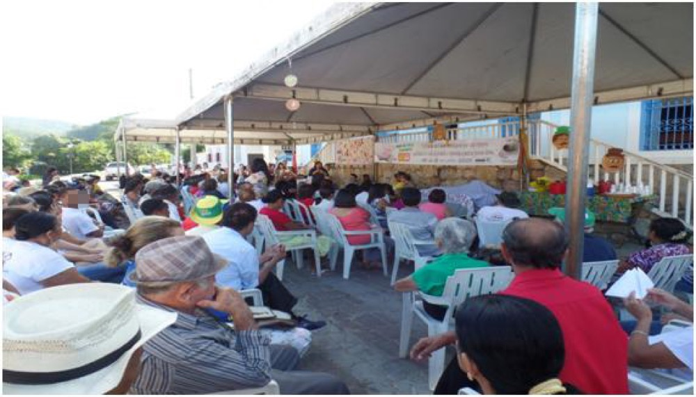
Imagem 6 - I Encontro de Enfrentamento à Violência contra a Pessoa Idosa por meio da Secretaria Municipal de Assistência Social, Trabalho e Habitação e do Conselho Municipal do Direito do Idoso, com os idosos do “Conviver”, Cidade de Goiás, 2015. Foto: Aline de Oliveira Rezende.
O primeiro grupo que viu as fotos do kit não teve dificuldade em identificar lembranças do passado. Frei Marcos foi o primeiro a dar seu depoimento.
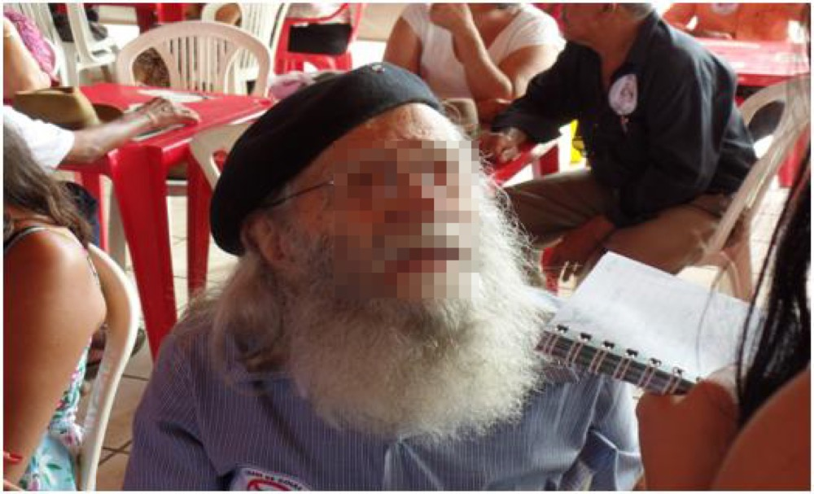
Imagem 7 - Frei Marcos no I Encontro de Enfrentamento à Violência contra a Pessoa Idosa por meio da Secretaria Municipal de Assistência Social, Trabalho e Habitação e do Conselho Municipal do Direito do Idoso com os idosos do “Conviver”, Cidade de Goiás, 2015. Foto: Aline de Oliveira Rezende.
Ali tinha só o Mercado, umas estacas para amarrar os animais. O pessoal chegava nos carreiros, descia os jacas e colocava lá para vender as mercadorias...e eu vendia biscoito, pão de queijo junto com meu primo que vendia café e chocolate. Levantava às 4 horas da madrugada e ia para a rua para vender primeiro o bolo de arroz nas casas, depois, passava vendendo bucho. E depois ia ao Mercado, não para a aula, às 7 horas, lá para às 11 horas, aí ia para o Mercado à tarde e... o resto era tudo pasto onde ficava os animais, tinha comida para os animais, capim para os animais. De quarenta a quarenta e quatro. (Frei Marcos, 2015)
43
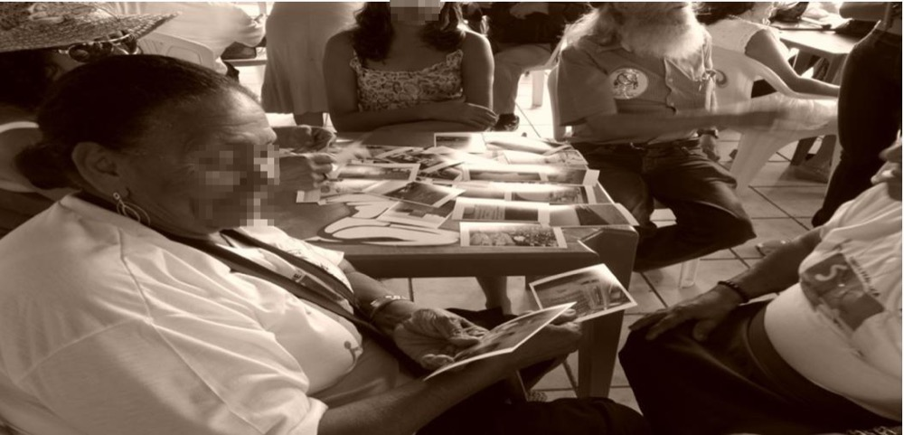
Imagem 8 - Identificação com o kit de fotos do Mercado Municipal no I Encontro de Enfrentamento à Violência contra a Pessoa Idosa por meio da Secretaria Municipal de Assistência Social, Trabalho e Habitação e do Conselho Municipal do Direito do Idoso, com os idosos do “Conviver”, Cidade de Goiás, 2015. Foto: Aline de Oliveira Rezende.
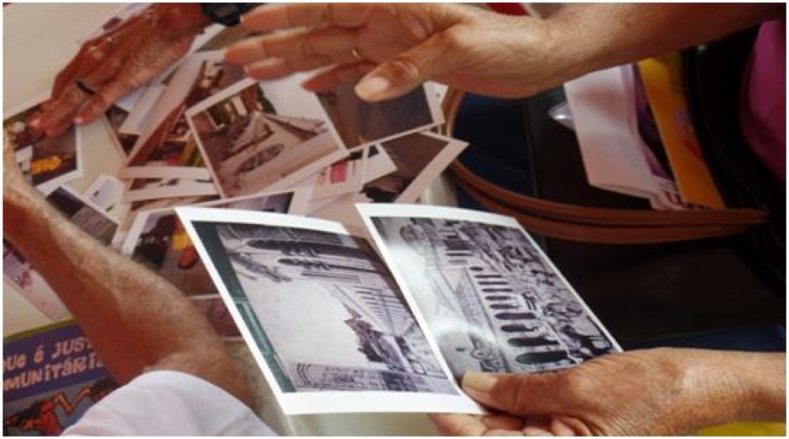
Imagem 9 - Foto: Dona Ivani Rodrigues Vidigal relatando como era o Mercado Municipal no I Encontro de Enfrentamento à Violência contra a Pessoa Idosa por meio da Secretaria Municipal de Assistência Social, Trabalho e Habitação e do Conselho Municipal do Direito do Idoso, com os idosos do “Conviver”, Cidade de Goiás, 2015. Foto: Aline de Oliveira Rezende.
Aqui era como se fosse um armazém e aqui era o Mercado, é o Mercado, aliás, só que não como é hoje. Ele era isso aqui ó, na época dos tropeiros, aí não tinha...aqui era onde os tropeiros ficavam pra vender as coisa dele e esse aqui era o mercado e aqui dentro. Tinha só um açougue e aqui tinha um cafezinho, que era o café do Ché, acho que escreve T-h-y-e-é, se eu não me engano o nome dele é esse. Ele tinha um chocolate muito gostoso, e toda semana meu pai trazia a gente para tomar o tal do chocolate. Antigamente, vinha esses tropeiros aqui para fazer comércio, para vender para os outros barracões, que ficavam ao redor do mercado. Onde tem aquelas lojas hoje em dia era barracão, e outros barracões que era ao redor do mercado, era barracão, era chamado barracão e vendia arroz, feijão, açúcar, café, gordura de porco. (Ivani Rogrigues Vidigal, 2015).
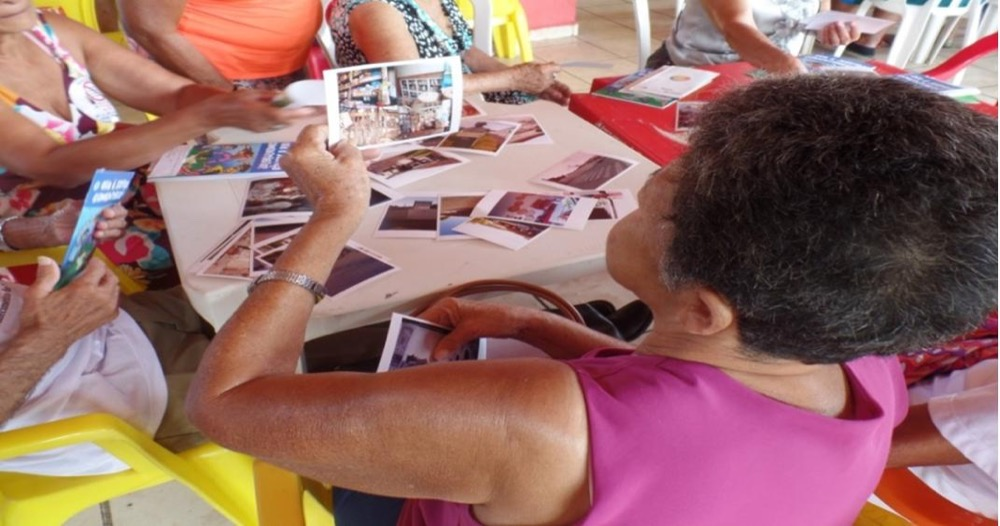
Imagem 10 - Dona Ivani Rodrigues Vidigal revivendo suas lembranças ao ver as fotos do Mercado Municipal no I Encontro de Enfrentamento à Violência contra a Pessoa Idosa por meio da Secretaria Municipal de Assistência Social, Trabalho e Habitação e do Conselho Municipal do Direito do Idoso, com os idosos do “Conviver”, Cidade de Goiás, 2015. Foto: Aline de Oliveira Rezende.
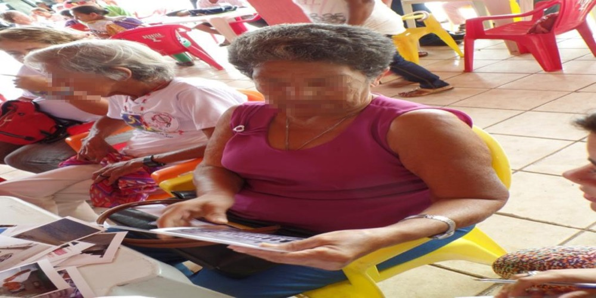
Imagem 11 - Dona Ivani Rodrigues Vidigal dando seu depoimento sobre o Mercado Municipal no I Encontro de Enfrentamento à Violência contra a Pessoa Idosa por meio da Secretaria Municipal de Assistência Social, Trabalho e Habitação e do Conselho Municipal do Direito do Idoso, com os idosos do “Conviver”, Cidade de Goiás, 2015. Foto: Aline de Oliveira Rezende.
Os próximos grupos, mais depoimentos e identificações. A reação da senhora Delici foi interessante, pois com saudade ela afirmava, com toda convicção, que viveu naquele tempo e era bem diferente e muito mais bonito do que é hoje. Quando olhou para as fotos, ela disse:
44
Essa aqui é a verdadeira, essa aqui é! Muitas vezes eu apiei nesse pátio aqui, com carreiro. Meu pai e minha mãe, a gente apiava dentro do Mercado e amarrava nosso burro no pátio e a gente destribuia nessa esquina e na outra, pra descarregar os nossos gargueiros, era tudo burraca e eu tinha 9 anos. Foi em 54, e eu ainda alcancei, foi de 53 para 54. Essa daqui é a verdadeira! Foram muitas vezes que apiamos aqui ó, nesse pátio. Ali ó, onde tá fazendo aquelas coisas, não tinha nada daquilo, era tudo limpo, era limpo assim ó. Foi de 1953 para 1954, foi nessa época... estragou tudo, não tem nada a ver, não tem nada. Para ser, para acompanhar do jeito que tá aqui, não tinha aqueles que tão fazendo do lado de cá e nem do lado de baixo. Agora os restaurantes já tinham, só que eram armazém e bar bem ali. Um restaurante era barbearia e o outro era armazém, e a gente deixava ovo e farinha no armazém. Aquele, esse que tá fazendo não tinha nada, era limpinho assim, do jeito que tá aqui! Aqui tá perfeito! Essa é a verdadeira, não tem outra, essa aqui!. Não! Concordo em refazer essa faixa bonita, maravilhosa aqui ó, da casa Rios até o final, de pegar a descida do portão do lado de cá daquele moto taxi era o armazém do seu Fio Teixeira, onde é o outro restaurante, era o bar do senhor Saribaldo, era bar noturno, então eu não podia entrar porque eu era pequena. Eram duas portas, uma entrada e uma saída, uma entrada e uma saída, aí ele vinha e pegava os trem. Tá tudo diferente, não tinha a rodoviária, não tinha nada. Era só isso aqui. Tinha um toco, dois tocos na frente do Mercado, onde a gente amarrava nossos burros e ia distribuir os trem. Aqui tá certo, mas os outros não. Agora essa daqui tá original, original, original. Parei muitas vezes ali dentro pra fazer, pra descarregar nosso animais, saco de açúcar, açúcar de pedra desse tamanho, banda de porco, linguiça, a gente entregava tudo no barracão do Nani, em 1953 e 1954. Era maravilhoso! Era maravilhoso! Me deu saudade demais da conta, me deu muita saudade. Essa aqui tá perfeita, essa daqui é original. Foi como ver meus pais descarregando aqui ó, foi como tava vendo meus pais, meus pais e eu descarregando os animais aqui. Muito bonito! (Delici, 2015).
Imagem 12 - Dona Delici relatando com detalhes como era o Mercado Municipal no I Encontro de Enfrentamento à Violência contra a Pessoa Idosa por meio da Secretaria Municipal de Assistência Social, Trabalho e Habitação e do Conselho Municipal do Direito do Idoso, com os idosos do “Conviver”, Cidade de Goiás, 2015. Foto: Aline de Oliveira Rezende.
O Mercado Municipal marcou a história de várias gerações, era onde as pessoas trabalhavam desde bem cedo para garantir seu sustento e, muitas vezes, criar os filhos; como no caso da dona Delici, que voltou ao passado ao ver as fotos do velho e querido Mercado, onde ajudava sua família. A saudade está presente em sua fala e a indignação de mudar um local que foi tão importante em sua vida e que aos poucos está perdendo suas características a cada reforma, quando são acrescentadas novas construções. Para ela, só o antigo prédio tem importância, pois foi o que conheceu na sua infância, os novos prédios só atrapalham a visão da construção antiga.
45
O próximo depoimento é da dona Catarina, pessoa alegre que se emociona em um breve depoimento da importância do Mercado na vida dela, da mãe e dos irmãos.
Meu nome é Catarina Santana da Silva, eu alembro o tempo em que trabalhava no mercadão, aquelas barraquinhas de lado, todas barraquinhas boas. Tinha seu Luis Tocó, a esposa dele, Bilô Preto, seu Joaquinzinho, o pessoal tudo que a gente trabaiava, muita gente. Aquelas coisas boas lá, aquelas panelas de barro, a essa senhora mesmo, o esposo dela, ajudando eles a mexer com as vasilhas de barro, aquelas lojas lá. Nus dia que não tinha quem barria o Mercado, eu ia ajudar a barre, né, ajudar a arrumar as bancas, banca de verdura muitas coisas boas lá, muitas coisas boas que tinham ali dentro daquele Mercado. Hoje tenho paixão, aquele mercadão antigo, velho, era uma coisa muito boa, era uma mansão, graças a Deus. A reforma do Mercado é até boa, né, de todo jeito tem que reformar pra não cair. É melhor reformar, né. Mudar eu acho que não divia não, né, acho que divia arrumar, reformar ele e passar pra dentro de novo, igual a rodoviária velha. Fico muito apaixonada deles mudar aquela rodoviária e pelo anos que a gente tem aquela rodoviária né... eu ajudei muito o povo ali de dentro, eu ajudava em troca da verdura, pra ajudar minha mãe, coisa que eu não tinha saúde pra ter o que comer eu ajudava lá. Eu acho ruim eles ter mudado o jeito daquele Mercado lá. Igual eu ajudava em troca da verdura, pra ajudar minha mãe e meu pai. A gente ia trabaia lá, zelar, fazia coberta de retaio pra a gente vender lá, tudo a gente rumava lá né, dum jeito ou dotro a gente enfrentava uma coisa e outra, né. Se Luis Tocó falava que tinha que cuidar desse Mercado, daqui uns tempo vai acabar tudo que tá passando por aqui e de forma tá mesmo.. Gostava de ver o povo animado naquele tempo, era mais unido. Tempo do pai do baiano, que vende pastel lá em cima, muitas vezes ele falou; aqui vai ser um lugar muito...., depois que a gente ficar de idade e não der conta de trabaia aqui, só por milagre de Deus, que vai acabar tudo. Falei: não, não acaba não...(Catarina Santana da Silva, 2015)
46
Cada pessoa que deu seu depoimento relatou um ponto específico e a maioria deixou transparecer o sentimento pelo Mercado. Lugar onde cresceram, trabalharam, passaram dificuldades ou momentos felizes. O senhor Cláudio lembra-se dos amigos, do trabalho do pai e ressalta a importância de cuidar do Mercado e manter viva a história e a cultura do local.
Esse aqui era do Ché! Eu lembro de uma vez, em que era bem pequeno, quando então o governador Mauro Borges Teixeira vinha em Goiás para conhecer aqui. O Ché ficava atrás dessa máquina aqui anotando tudo. Essas máquinas, vocês que não sabem, ela faz um barulhinho para registrar, um barulhinho que a gaveta está sendo violada, mexida, aberta, liberalmente. Essa aqui é uma construção, em minha opinião acabou com o visual do Mercado, acho que é ganância do ter, do capitalismo desenfreado, que fizeram com que as pessoas não escolhessem lugar para colocar suas coisas para vender, né! E com isso evidentemente que traria benefício para muitos por causa do emprego, alguém ficou empregado é claro, mas em compensação, por outro lado, é para quem gosta dessas coisas, principalmente nós aqui em Goiás, que temos uma história, que cultivamos a cultura, atrapalhou o visual do Mercado... O Mercado Municipal foi criado com intuito de atender em especial o pessoal que veio do meio rural, que ali encontrava o que precisava, gênero alimentício. Outro dado interessante que se dava no Mercado era do pessoal que vinha do meio rural que trazia as coisas, essas coisas que eu digo é carne, toicinho e outras coisas mais que vendiam no mercado. O pessoal do mercado comprava aquelas coisas que vinham, inclusive, meu próprio pai trazia, era fornecedor dessas mercadorias. Trazia nas bruacas. Bruacas, não sei se é de conhecimento de vocês, é um objeto feito de couro de vaca muito bem trabalhado, muito bom e conservava ou então trazia... vou usar o termo de jacá que é o nome que se dá no meio rural. Trazia também toicinho defumado, carne fresca, capado inteiro, trazia para vender ao pessoal do Mercado. Era o ponto do pessoal que levantava cedo, era o ponto de tomar café, várias pessoas não contentavam com o café que tomava em casa, mas também com intuito de fazer, botar as fofocas em dia, ia cedinho pro Mercado tomar café e encontrar os compadres e botar as fofocas em dia. Hoje, vejo o Mercado Municipal muito abandonado né, ele não foi criado com esse propósito de atender o meio rural e também o meio urbano, mas com a criação, com o surgimento de vários supermercados e mercearias, então o pessoal dos supermercados aqueles que eu não sei se. para falar a verdade se tem alguém que tome conta, não criaram mecanismo capaz de fazer com que o Mercado sobrevivesse. O mercado é interessante para quem gosta de olhar o lá atrás, não sei como que fala, não sei o barroco ou qual é o estilo que é criado ali, mas deviam, como disse anteriormente, ter alguém que tivesse uma visão para reformar aquilo ali e fazer com que o Mercado tivesse uma vida! Tivesse uma alma! E fosse apresentado com tal: um Mercado. Porque mercado, em minha opinião, é onde vende e troca mercadoria, né. E não tem nada daquilo ali mais... aquilo que é bonito tem que preservar. (Claudio Leite, 2015).
47
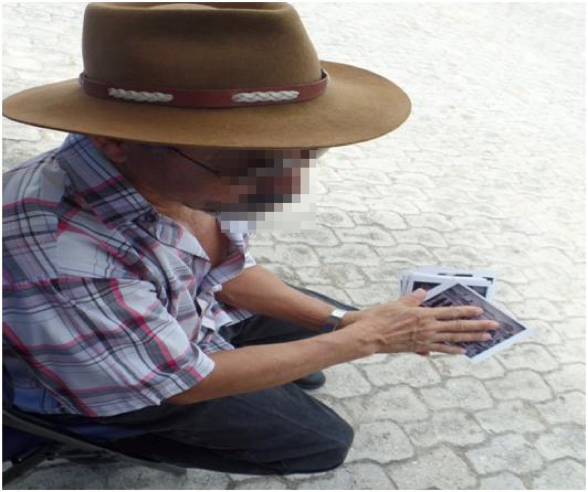
Imagem 13 - Claudio Leite falando sobre o Mercado Municipal no I Encontro de Enfrentamento à Violência contra a Pessoa Idosa por meio da Secretaria Municipal de Assistência Social, Trabalho e Habitação e do Conselho Municipal do Direito do Idoso, com os idosos do Conviver, Cidade de Goiás, 2015. Foto: Aline de Oliveira Rezende.
No dia 19 de junho de 2015 executamos o projeto de intervenção O Mercado Municipal e Cidadania Patrimonial” na Escola Municipal “Os Pequeninos”, para os alunos do 5º ano. A metodologia foi diferente, mesmo usando o kit de fotos. Como eram crianças e a maioria mora na periferia e nunca entrou no Mercado, só passou de coletivo, começamos contando a história do Mercado Municipal, detalhando como funcionava e o que era vendido no local antigamente, como funcionava o pagamento com a troca de alimentos e como ele funciona nos dias atuais. As crianças ficaram em absoluto silêncio escutando cada detalhe.
Quando passamos as fotos o olhar de curiosidade e surpresa de ter aquele lugar na cidade e muitos não conhecerem chamou a atenção. Cada aluno escolheu uma foto e falou porque a escolheu, se era alguém conhecido, se conhecia o local ou se já tinha comido algo que estava nas fotos. Alguns não queriam falar por nunca ter conhecido o local, então fizemos uma nova proposta para eles. Que eles falassem e depois desenhassem o que chamou mais atenção e o que gostariam de conhecer, fazer ou comer no Mercado, e a resposta aos questionamentos foi rápida, em forma de desenhos e explicações.
Foi uma experiência diferente e encantadora todas as três intervenções, mas essa me mostrou de forma clara o distanciamento das crianças que moram na periferia com o Centro Histórico da Cidade.
Intervenção na Escola Municipal Os Pequeninos
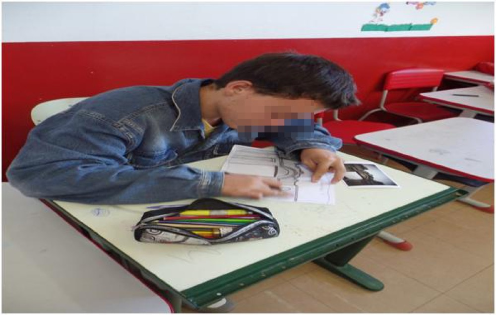
Imagem 14 - Aluno Rodrigo do 5º ano da Escola Municipal “Os Pequeninos” desenhando o que ele achou mais bonito no Mercado Municipal, Cidade de Goiás, 2015. Foto: Aline de Oliveira Rezende.
Para uma criança, cada experiência toma forma e cor na ponta do lápis. É mais fácil desenhar. Com o desenho não mostraram apenas o que tinham vontade de conhecer ou o que acharam mais bonito, enquanto desenhavam mostraram a capacidade de relacionar detalhes, pessoas e locais das fotos com fatos do dia a dia, histórias, falas dos pais, dos avós e da professora.
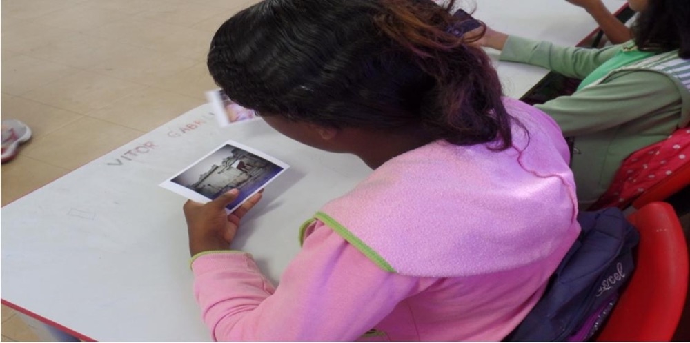
Imagem 15 - Alunos do 5º ano da Escola Municipal “Os Pequeninos” interagindo com o kit de fotos do Mercado Municipal, Cidade de Goiás, 2015. Foto: Aline de Oliveira Rezende.
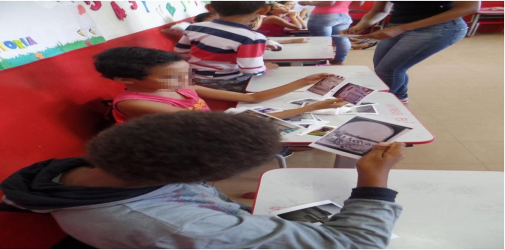
Imagem 16 - Alunos do 5º ano da Escola Municipal “Os Pequeninos” interagindo com o kit de fotos do Mercado Municipal, Cidade de Goiás, 2015. Foto: Aline de Oliveira Rezende.
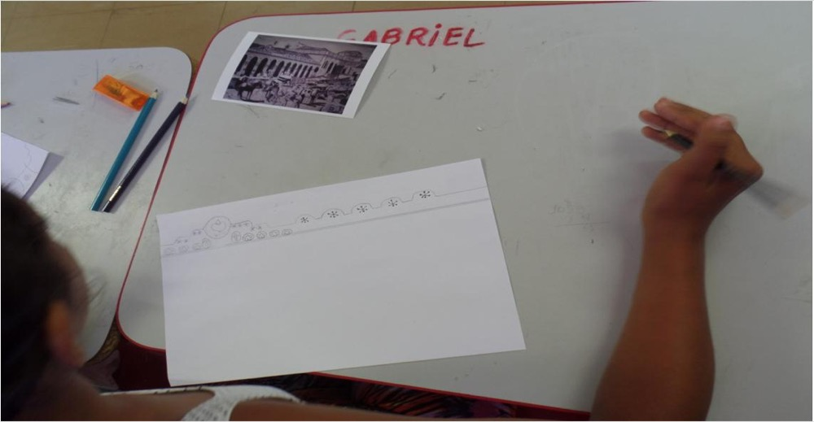
Imagem 17 - Aluna Leticia Eduarda, do 5º ano da Escola Municipal “Os Pequeninos”, desenhando o que ela mais acha bonito e importante do Mercado. Interagindo com o kit de fotos do Mercado Municipal, Cidade de Goiás, 2015. Foto: Aline de Oliveira Rezende.
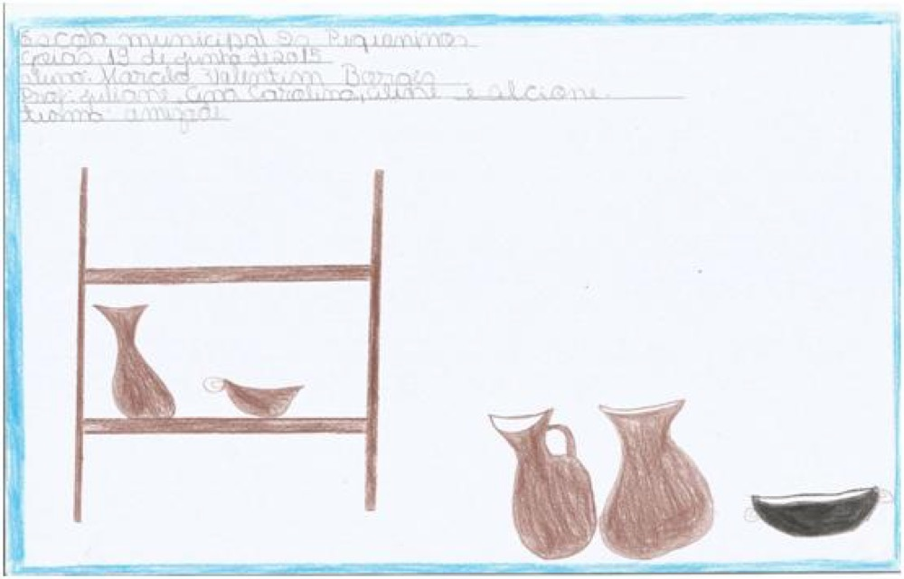
Imagem 18 - O resultado foi melhor que o esperado.Imagem 19 - O Artesanato que é vendido no Mercado Municipal.
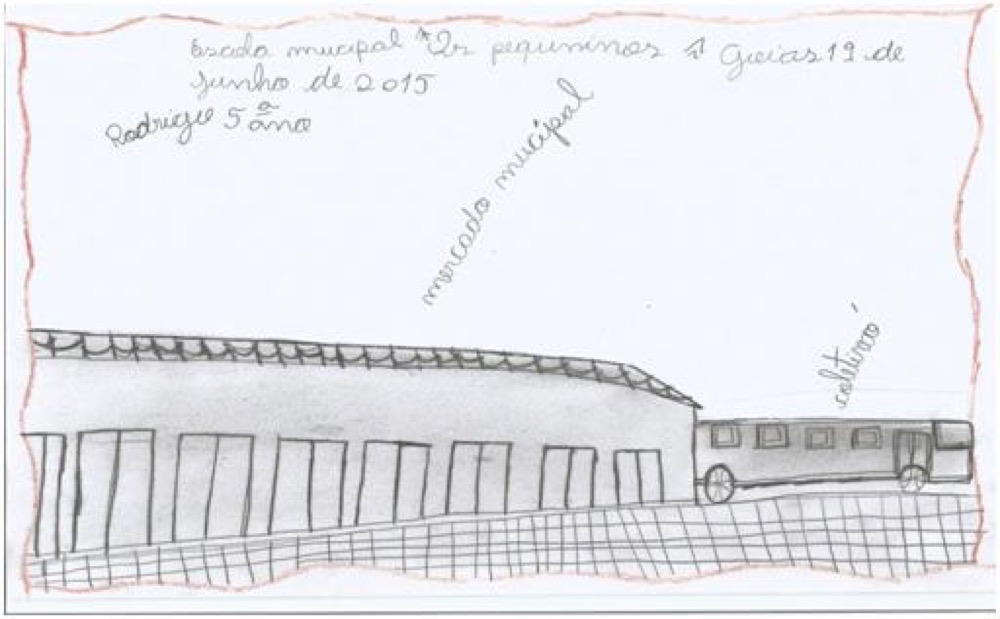
Imagem 20 - Imaginar o sabor de cada coisa naquele lugar e que tem de gostoso foi é claro; sorvete, salgado ou bolinho de arroz.os”, desenhando o que ela mais acha bonito e importante do Mercado. Interagindo com o kit de fotos do Mercado Municipal, Cidade de Goiás, 2015. Foto: Aline de Oliveira Rezende.48
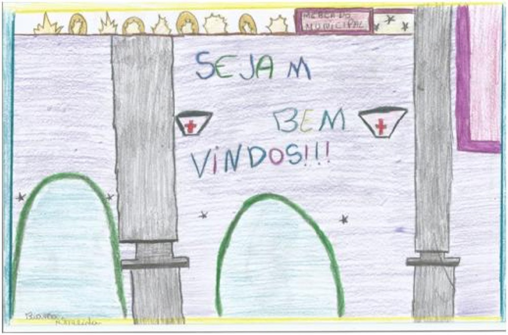
Imagem 21 - Como o aluno vê o Mercado, do coletivo ele vê a nova construção. É o mais perto que ele chegou do Mercado Municipal.
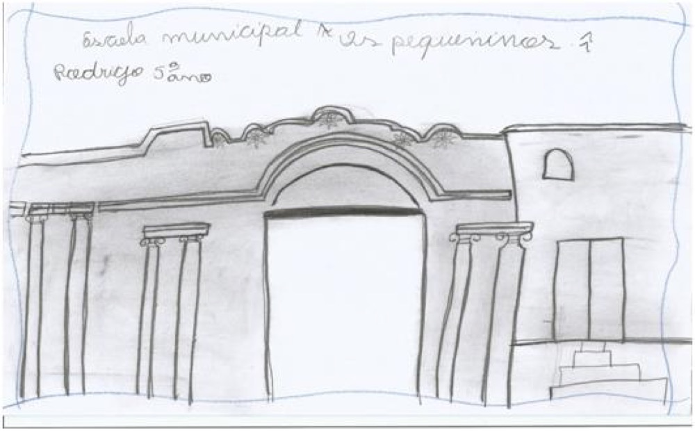
Imagem 22 - Como todos devem ser recebidos em um lugar tão bonito.
Uma das entradas do Mercado Municipal, que chama atenção pela beleza do arco. Beleza que aparece em mais de uma foto escolhida pelos alunos e que o aluno Rodrigo desenha por que quer conhecer. O Rodrigo é o mesmo aluno que desenhou a nova construção do Mercado com o coletivo ao fundo.
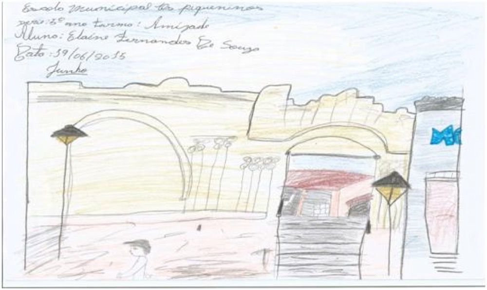
Imagem 23 – Desenhos dos alunos
Todos os desenhos feitos pelos alunos mostram a importância da construção antiga com sua beleza, arcos e pilastras. A construção nova não chamou atenção, apenas pelo fato de esconder a construção antiga e ser a visão de quem passa ali.
CONCLUSÃO
A Intervenção levou tudo que estudamos em sala de aula para a prática, começando pela educação patrimonial, que, desde o começo, serviu como ponto de partida para desenvolver o projeto nos três locais: curso técnico integrado em Conservação e Restauro, na modalidade Jovens e Adultos (EJA) no Instituto Federal de Goiás, I Encontro de Enfrentamento à Violência contra a Pessoa Idosa por meio da Secretaria Municipal de Assistência Social, Trabalho e Habitação e do Conselho Municipal do Direito do Idoso, com idosos do “Conviver” e 5º ano da Escola Municipal “Os Pequeninos”.
Desde o início, ficou estabelecida a metodologia a ser aplicada para chegar aos resultados esperados. E os resultados superaram o esperado, todos os objetivos, tanto o geral como os específicos, foram alcançados. Os depoimentos ampliaram o conhecimento do Mercado Municipal, passamos esse conhecimento para as crianças, que não conhecem pessoalmente o Mercado, e aprendemos muito com o significado e sua importância histórica nos relatos de cada grupo trabalhado.
Um dos grandes desafios é a vivacidade do local que, aos poucos, está ficando cada vez mais vazio. A preservação e a aproximação da população são uma preocupação. A intervenção aproximou os alunos da Escola Municipal “Os Pequeninos”, mas essa aproximação é um trabalho que não pode parar. É necessário um planejamento de trabalho em longo prazo para que esse conhecimento, pertencimento e identificação não se percam que, na fala de Ricardo Oriá, estão presentes na importância da história, na vida dessas crianças para o futuro da cidade e para uma população que se identifica com a sua história, cultura e patrimônio.
Hoje, todos sabemos que a finalidade básica do ensino da História é fazer com que o aluno produza uma reflexão de natureza histórica, para que pratique um exercício de reflexão crítica, que o encaminhe para outras reflexões, de natureza semelhante, na sua vida e não só na escola. Afinal de contas, a história produz um conhecimento que nenhuma outra ciência produz e ele nos parece fundamental para a vida do homem – indivíduo eminentemente histórico. O estudo da história nos possibilita aprender e apreender um referencial que nos ajuda na leitura e compreensão da realidade social. (FERNANDES, Ricardo Oriá,1995).
A Cidade de Goiás por ser uma cidade que tem o título de Patrimônio Histórico da Humanidade deveria ter um planejamento para a integração da população que não mora no Centro Histórico. A aproximação e a identificação só acrescentam no processo de preservação, é difícil lutar pela preservação de um lugar que não faz parte da história de um indivíduo. Olhar para a cidade apenas como uma cidade turística não é interessante para os moradores e nem para os visitantes.
49
As pessoas que visitam a cidade têm o intuito de conhecer uma cidade com seus prédios, história e cultura preservados; conhecer pessoas que se identificam e que valorizam seu patrimônio. Não é possível valorizar o que não se conhece. O Mercado Municipal tem um papel de grande importância na história da cidade, ainda é um ponto de encontro da população, de sustento de antigos moradores, que criaram seus filhos trabalhando no comércio do local, e de visitantes que querem conhecer a culinária local, o prédio antigo e as histórias de um patrimônio preservado.
REFERÊNCIAS
TYLOR, Edward. Primitive Culture, Source: Wikimedia Commons. Popular Science Monthly, New York, 26, 1884.
FERNANDES, J. Ricardo Oriá. A cultura no ordenamento constitucional brasileiro: impactos e perspectivas. Consultoria Legislativa. Ensaios sobre impactos da Constituição Federal de 1988 na sociedade brasileira. Brasília: Edições Câmara dos Deputados, 2008.
FONSECA, Maria Cecília Londres. O patrimônio em processo. Rio de Janeiro: UFRJ, 2005.
Orientadora Acadêmica: Lucinete Aparecida de Morais
Coordenadora de orientação: Ivanilda Aparecida Andrade Junqueira
INTRODUÇÃO
A Cidade de Goiás foi fundada em 1726, por Bartolomeu Bueno, e possui características peculiares da arquitetura da época que permanecem preservadas até os dias atuais. Por essa relevância, foi tombada como Patrimônio Histórico da Humanidade, título concedido em 2001 pela UNESCO.
Com o aumento da população, começou a surgir escassez de alimentos e criou-se então, em 1857, o Mercado Municipal, que é o objeto de estudo deste trabalho, cujo tema é Mercado Municipal e Cidadania Patrimonial. Esse espaço foi escolhido para essa intervenção devido às observações feitas por algum tempo no cotidiano do mercado. Foi constatado que ali era um ponto de marco na cultura, na história e na tradição vilaboense, mas que eram necessárias algumas observações sobre o local em questão, como, por exemplo, a falta de orientação sobre a valorização patrimonial e a falta de estrutura para receber o público.
Partindo desse pressuposto, esperava-se com essa intervenção despertar a população da Cidade de Goiás para a importância de se ter a educação patrimonial e como isso pode contribuir para a preservação da cultura e da memória do espaço. E esse objetivo foi alcançado, pois o público foi composto por crianças entre 9 e 13 anos, partindo para jovens e adultos até chegar nos idosos, podendo assim constatar que esse trabalho tem e terá muita importância em discussões que nortearão sobre o tema patrimônio, cultura, cidadania e educação patrimonial.
1 - INTERVENÇÃO NO INSTITUTO FEDERAL DE GOÁS (IFG)
Vários acontecimentos nortearam essa intervenção, que foi realizada em três lugares diferentes, a primeira fase foi no IFG, no horário noturno, com os alunos do curso Métodos de Restauro, no dia 16 de junho de 2015.
A professora Edneia foi quem nos recebeu, com uma receptividade harmoniosa e calorosa. Então a proposta foi apresentada, eram 7 alunos na sala e 2 professoras, a Edneia e a Cristiane. Foi esclarecido que era uma intervenção sobre o Mercado Municipal e que estava ali uma aluna do curso lato sensu interdisciplinar em Patrimônio, Direitos Culturais e Cidadania da Universidade Federal de Goiás.
50
Logo o foco foi direcionado, apresentado a eles fotografias do espaço Mercado Municipal em diferentes momentos de sua existência. Também foi servido para todos o bolo de arroz da dona Inês e café, para despertar os instintos culturais da Cidade de Goiás através da tradição, costumes e tudo que o bolo de arroz revive na nossa memória. Esse foi o pontapé inicial para nossa conversa, então pedi a eles(as) que me falassem algo que guardavam na memória sobre o Mercado Municipal, e que fatos eles vivenciaram nesse lugar.
No começo ficaram envergonhados para falar, mas, de repente, assim com uma vontade gritante, a Cristiane, uma das professoras do IFG, que foi nesta aula para prestigiar este trabalho se manifestou, pedindo para contar uma história. Ali foi possível sentir que realmente tinha escolhido o objeto certo para esta ação, pois nesse momento pode-se entender o quão grande é o valor desse local para muitos cidadãos vilaboenses.
O depoimento dela foi simplesmente emocionante, foi possível perceber sua emoção ao falar da história de sua família. Na verdade, ela contou a história de seu sogro, Sebastião de óculos. Ela fala que ele veio de Minas para a Cidade de Goiás com 12 anos de idade, fugindo de uma pobreza imensa daquele lugar, na esperança de vida melhor nas terras compradas por seu pai nessa cidade.
Segundo ela, seu sogro morava na roça e veio para acidade para tentar ganhar dinheiro no ponto de encontro, que hoje é o Mercado, para vender o arroz plantado pelo pai na roça. Daí ele começou a fazer parte da história do Mercado Municipal, começou então a fazer as trocas de um produto pelo outro, fazendo parte dos comerciantes do mercado. Vendia fumo e farinha em uma portinha para aumentar seu comércio, porém, ele não tinha nada além desses dois produtos, então comprou uma bicicleta e começou sua vida comercial ali.
A Cristiane relata que seu sogro dizia que o Mercado era um local de relações entre as pessoas, das relações de amizades estabelecidas ali. “E foi ali que ele recebeu o apelido de ‘Bastião de Óculos’”, e foi assim que ele ficou conhecido até seus últimos dias de vida. Esse comerciante passou do mercado para um hipermercado Rio Vermelho hoje chamado Master.
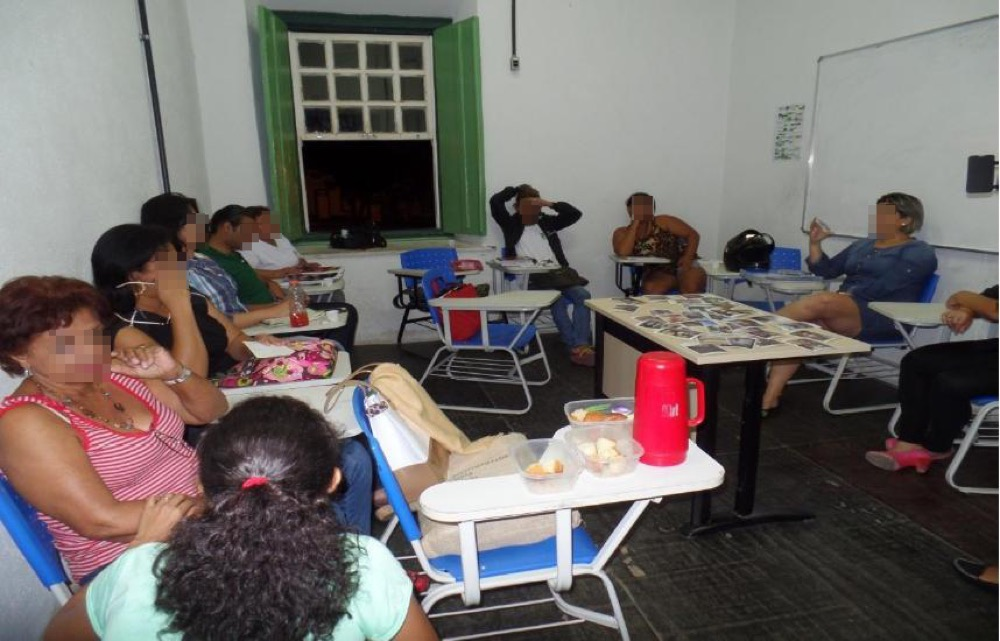
Imagem 1 – Alunos do curso Técnicas em Restauro do IFG. Foto: Aline de Oliveira Rezende (2015).
A partir do depoimento da Cristiane, a conversa disparou, quando terminou de falar, uma das alunas, também muito emocionada e com os olhos cheios de lágrimas, começou a contar sua história. Seu nome é Núbia Regina, de 40 anos. Ela começa a falar sobre suas memórias, sobre seu avô, sobre seu tio que tinha um açougue no mercado, e fluiu o assunto. Em sua fala, ela contou sobre a casa do avô, sobre as memórias vividas com ele, tudo mediante a fotografia do Mercado que ela escolheu entre as 39 fotografias.
Dona Diva Pinheiro Barbosa, de 65 anos, a aluna mais velha da sala, é muito falante também e quis contar sua história. Foi muito bom ver ela se manifestar, pois sabia que dali sairiam grandes histórias; contou de lábios abertos, risonha, as artimanhas da sobrevivência da sua época de criança. Disse de suas dificuldades e de como o Mercado teve participação na sua história que, embora tivesse sido triste, ela lembrava com saudosismo e disse ainda, com grande orgulho,que os dias de hoje são maravilhosos, se comparados com aquela época difícil, mas feliz.
51
No meio da conversa, dona Diva contou qual memória tinha sobre o Mercado. Nesse momento, de forma calma e constante, ela começa. Disse que naquele tempo o Mercado era bem diferente e trazia com ele grandes facetas. Todos os dias ela e seus irmãos iam até lá, nos açougues que existiam, para buscar os ossos de vaca que sobravam da desossa do animal.
Levava tudo para casa, onde sua mãe, com cuidado, retirava toda a sobra de carne, assim como também tirava o tutano que fica preso nos ossos. Depois de limpos, os ossos serviam para fazer sabão. Dona Diva, novamente com os irmãos, saia de porta em porta para vender o produto feito pela mãe. Mexendo em sua memória, ela lembra que muitas vezes tinha que dizer que o sabão era bom, mesmo sem saber se era verdade, para conseguir levar o dinheiro para casa. Continuando sua prosa, ela fala que o mercado era frequentado, em sua grande maioria, por homens, e que as mulheres não podiam ir sozinhas.
Durante as conversas, fui perguntando o que achavam da restauração do Mercado, se lá ainda existia um espaço de cidadania, onde todos pudessem se sentir pertencentes desse patrimônio enquanto estivessem ali, se havia algum relato sobre o distanciamento do espaço com sua real finalidade, que em sua criação era o comércio e a convivência. Foi quando a professora Edneia fez seu relato, dizendo que acredita que o Mercado é sim um espaço de convivência, e que nele acontece a cidadania. Citou que todos os dias ela toma café na pastelaria do Macalé, e que sua esposa vende o jornal Daqui. O diferente é que todos os dias ela anota em uma caderneta quem pegou o jornal, e quando alguém falha ela liga para ver o que houve. Assim forma-se um vínculo entre comprador e comerciante, assim como nos primórdios do Mercado Municipal.
Quanto à restauração, ela apoia, e diz que se é para melhorar tem que ser feita. A professora Cristiane também apoia a ideia de que a restauração tem de ser feita, dizendo que tudo tem que acompanhar as necessidades dos tempos modernos, sabendo que o novo e o velho podem andar juntos em prol da modernidade. Cristiane fala que “o passado é a construção do presente”
A aluna Núbia foi bem direta e disse logo que era totalmente contra a restauração da forma como está sendo feita no Mercado, ela diz que o velho deve ser restaurado e mantido como antes, não se deve modificar nada em prol de nada.
Também participou da conversa a aluna Nilzmone, de 36 anos, que trabalhou alguns anos no restaurante do Mercado. Ela conta que seu pai, o Sr. “Careca”, tinha uma oficina na beira rio, bem em frente ao mercado, e a memória que ela mais traz no espaço do Mercado são as enchentes. Ela diz que, em meio a tanta água, via bonecas descendo das lojas e queria muito pular na água para pegar. A água levou tudo que havia naquele lado do rio, inclusive a oficina do pai. Hoje ele refez seu local de trabalho, ainda bem perto do Mercado, só que não na beira do rio. Ela disse ainda que o Mercado recebe todo tipo de público e de vários lugares do Brasil. Então pensa que ali é um espaço onde existe cidadania, e que todos são tratados e respeitados por igual.
52
Depois de nossa conversa encerramos o encontro. A Edneia, com toda educação, agradeceu, e ainda tivemos um dedo de prosa na porta da sala. Ali foi um grande sucesso, onde se aprendia e se ensinava. É envaidecedor saber que essa intervenção vem para contribuir na defesa de um patrimônio histórico, que resguarda memórias, costumes hábitos e vivências de tantas pessoas. E que este trabalho irá contribuir para discussões sobre o Mercado Municipal.
2 - INTERVENÇÃO NOCONVIVERCIDADEDEGOIÁS
A segunda fase da intervenção aconteceu dois dias depois, no dia 17 de junho de 2015, e foi aplicada para os idosos do Conviver da Cidade de Goiás. Foi uma espécie de passeio, na verdade uma caminhada do diga não à violência contra o idoso. Tudo se iniciou na porta da prefeitura, pouco a pouco foram chegando os idosos, alguns chegaram de carro, outros a pé, vieram vários, de diferentes bairros da cidade. Esse evento foi promovido pela prefeitura da Cidade de Goiás, em parceria com a direção do Conviver, sob o controle de Dona Iolanda, que foi quem apoiou essa intervenção e autorizou sua execução nesse evento grandioso.
Foram se ajeitando nas cadeiras e o evento foi seguindo a todo vapor. Logo já havia dezenas de pessoas. Estava presente a prefeita Selma, a vereadora Eliane de Bastos e várias autoridades. Ali discursaram, falaram da importância de se cuidar dos idosos e como são preciosos. E se pensássemos bem, realmente eles são preciosos demais, pois retratam o passado, o presente e o futuro de uma sociedade. Eles são memórias vivas, são verdadeiros patrimônios históricos. Com eles são trazidas manifestações culturais, modos e costumes e como essa história vem se transformando em meio a tantas mudanças.
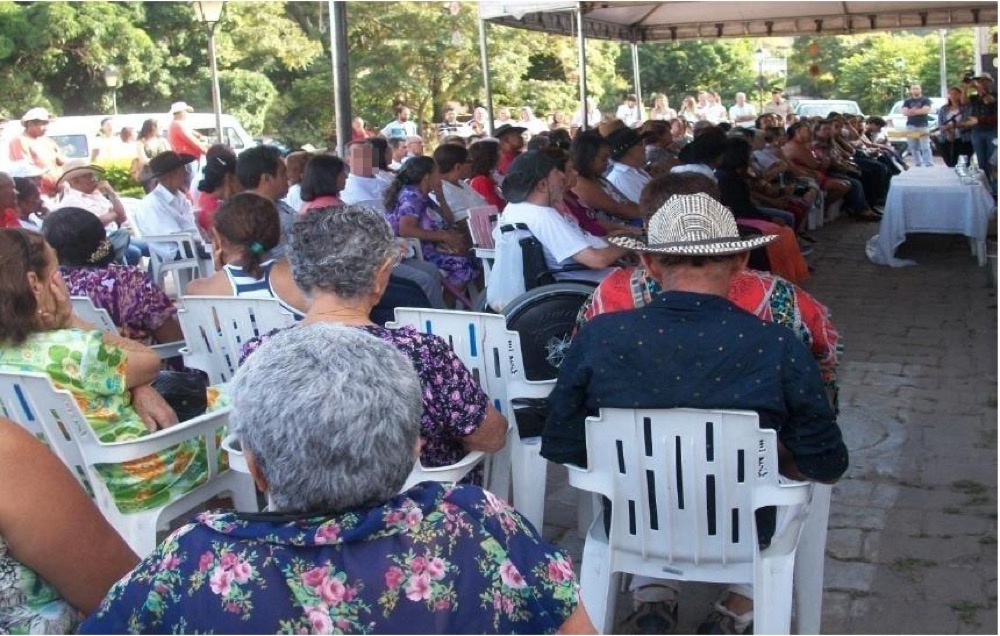
Imagem 2 – Concentração dos idosos na porta da prefeitura para o início do passeio. Foto: Ana Carolina Ferreira Farias (2015).
Foi preparado um delicioso café da manhã para eles. Esse evento foi grandioso, muita gente presente. Após o café, iniciou-se a caminhada, que ia da porta da prefeitura até a praça de eventos. Esse trajeto foi feito a pé para os idosos que conseguiam caminhar e os outros seguiram de carro.
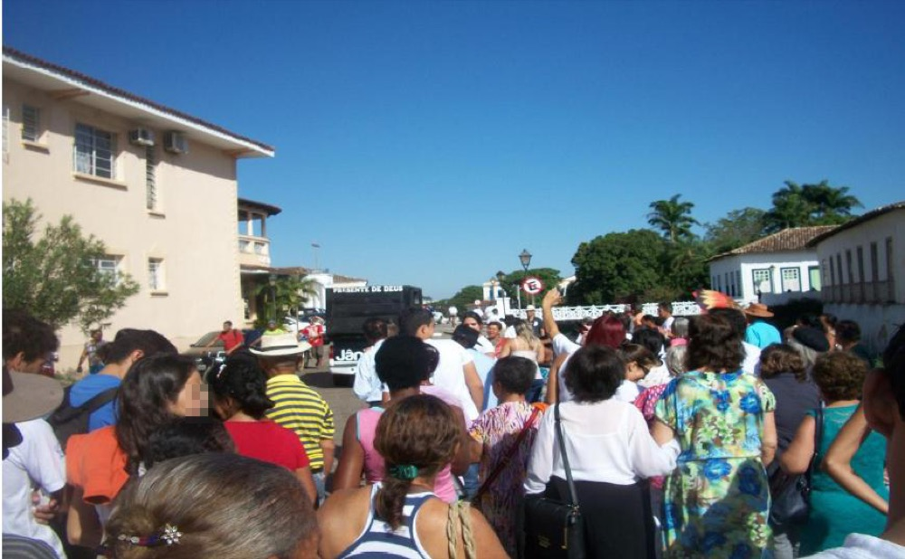
Imagem 3 – Início da caminhada com os idosos rumo a praça de eventos. Foto: Ana Carolina Ferreira Farias (2015)
Seguiram com todo entusiasmo, rumo ao local principal do evento. No caminho passaram pelo Mercado Municipal, que é a peça chave desta intervenção e, enfim, chegaram na praça de eventos. Todos se sentaram, aí começaram as apresentações e a execução dessa intervenção.
Para iniciar a proposta de intervenção foram apresentadas de mesa em mesa várias fotografias, de diferentes momentos e lugares do Mercado Municipal. Começando a conversa, a Iolanda pegou o microfone e perguntou quem tinha uma história para contar sobre o Mercado, logo vários se manifestaram e se iniciaram os depoimentos.
O primeiro a falar foi Frei Marcos, que relatou sobre sua venda de café e biscoito no mercado, com seu primo, que vendia chocolate. Conta que acordava às 4 da manhã para começar suas vendas. Vendia bolo de arroz e bucho nas ruas, às 7 da manhã ia para a escola, e, a partir das 11, ia para o Mercado, para suas vendas de biscoito.
53
Ele lembra que no início o Mercado não era como está hoje, era apenas um espaço com algumas estacas para se amarrar os cargueiros. Também recorda do coronelismo do senhor Brasil Caiado, que chicoteava as pessoas ali mesmo, em meio a todos, quando algo não lhe agradava. Frei Marcos ficou ali de 1940 até 1944, depois se mudou da Cidade de Goiás para estudar.
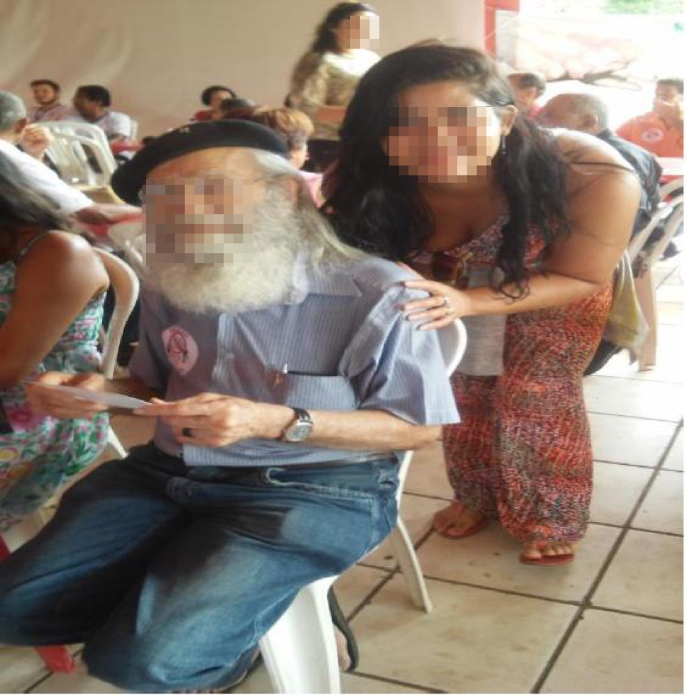
Imagem 4 – Frei Marcos e a estudante Ana Carolina. Foto: Alcione Francisca Marques (2015).
De prontidão estava Dona Antolina Oliveira, de 72 anos, que fala com muita propriedade dos tempos em que no Mercado se vendia produtos de qualidade, que vinham diretamente do agricultor, e que ali era um ponto de encontro, de passeio para as pessoas da época de sua infância e adolescência. Seu pai também foi vendedor no Mercado, ele vivia da agricultura e trazia seus produtos para comercializar no Mercado.
Seguindo com o assunto, o senhor João de Souza Cruz, 64 anos, fala que o Mercado não deveria ser restaurado, ele se coloca totalmente contra. Disse que o Mercado era um espaço de convivência no passado e que hoje ele está perdendo sua essência.
Dona Ivani Vidigal, de 77 anos, foi a próxima dar seu depoimento. Ela pegou duas fotografias do Mercado antigo e começou a contar sua história. Com precisão,ela apontava para a fotografia e ia mostrando e falando como era cada espaço. Lembrou-se dos cargueiros, com seus animais, que ficavam no espaço aberto no Mercado. Com saudosismo, falou dos tempos em que o Mercado era um espaço de comércio,mas, também, era um local de convivência, onde as pessoas se conheciam por nome e os negócios eram feitos na confiança. Disse também que ia sempre ao bar do Thyer tomar café e fazer lanche com sua família.
Dona Delici, de 75 anos, é a próxima a contar sua historia, com uma fotografia na mão ela começa a falar assim:
Essa aqui é a verdadeira, muitas vezes eu apiei nesse pasto aqui com o cargueiro, meu pai e minha mãe nois apiava dentro do mercado e amarrava nosso burro no pátio do mercado e nois distribuía nessa esquina e na outra pra descarregar nosso cargueiro, era tudo buraco. Eu tinha 9 anos foi em 54, de 53 a 54, essa aqui é a verdadeira foi muitas vezes que nois apiamo aqui ó, nesse pátio. Ali onde está fazendo aquelas coisas num tinha nada daquilo era tudo limpo, era reto aqui ó.
Enquanto falava, foi possível sentir quantas emoções aquele lugar revivia nela, os olhos brilhavam e seus lábios se abriam ao falar do seu pai, de sua mãe e de sua infância. Quando questionada, dona Delici dizia que a restauração não tem nada a ver com o original, que está tudo errado, essa parte nova que está sendo construída não existia, só existia o prédio antigo. Como a maioria dos idosos, ela se posicionou totalmente contra a restauração.
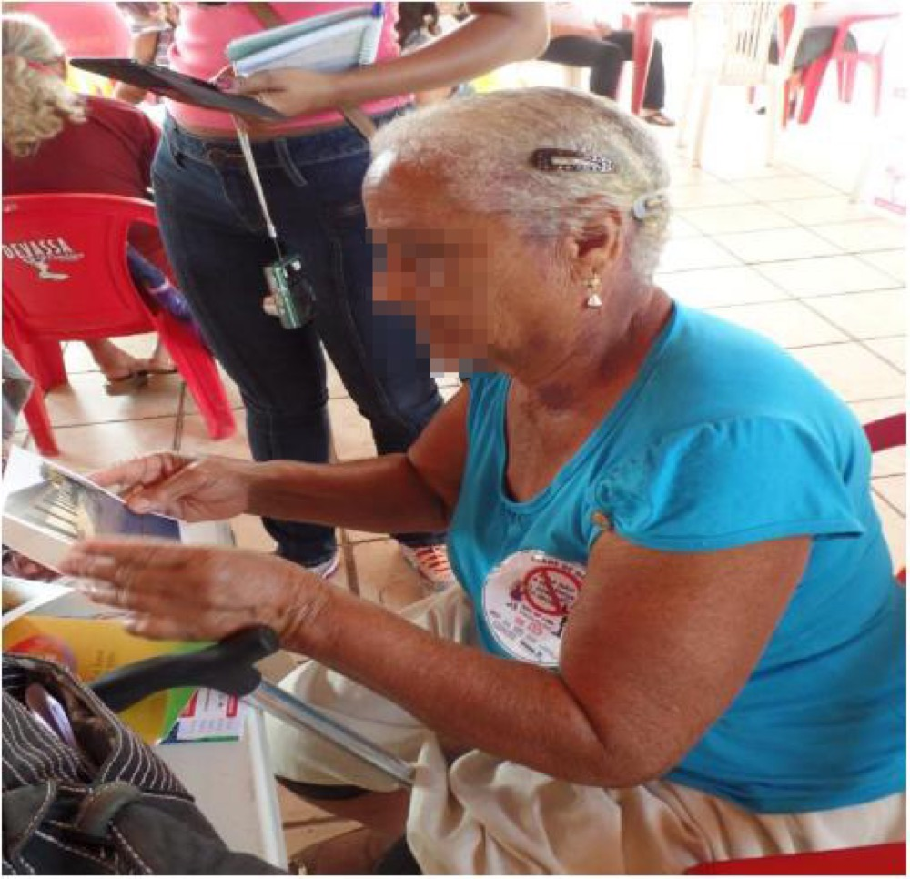
Imagem 5 – Dona Delici olhando as fotografias do mercado. Foto: Aline de Oliveira Rezende (2015).
E, por fim, o senhor Cláudio Leite, de 65 anos, todo disposto, começou seu relato. Ele não quis falar ali no meio de todos, disse que estava muito barulho e resolveu ir para um lugar mais afastado, com mais silêncio. Pegou uma cadeira e levou para longe, então começou seu depoimento. Ele olhou foto por foto e falou sobre quase todas. Começou contando que o mercado foi criado para atender a população com gêneros alimentícios, que vinham do meio rural para ser vendido aqui na Cidade de Goiás.
54
O senhor Cláudio diz o pai era um dos fornecedores de alimentos no Mercado, e que a grande parte da comercialização era feita por meio de trocas. Ele e o pai vinham da roça com as bruacas (objeto feito de couro de vaca para transportar os alimentos) cheias para descarregar no Mercado. Relatou os encontros no “Bar dos Artistas”, os momentos de descontração vividos ali e, com toda simplicidade, mostrou na fotografia como era o antigo pátio do mercado, que ele presenciou no passado.
3 INTERVENÇÃO NA ESCOLA MUNICIPAL OS PEQUENINOS
A terceira é última parte da intervenção aconteceu na Escola “Os Pequeninos”, com os alunos do 5° ano, no dia 19 de junho de 2015. Eram cerca de 20 alunos, todos muito simples e de olhar desconfiado ao ver alguém que não fosse a professora Juliane na sala de aula.
Foi apresentada a proposta para eles, de forma simples e de fácil compreensão. Os alunos receberam as fotografias do Mercado, para se familiarizar com o local. Bom, essa foi a tentativa, mas quando foram questionados sobre o Mercado Municipal, nenhum dos alunos da sala - que na grande maioria mora em bairros afastados do centro - conhecia o local.
Uma barreira se formou ali, então foi contada a história do Mercado de forma resumida e clara, tentando identificar o trajeto que eles faziam para passar próximo daquele lugar. Logo alguns começaram a se identificar com o local. Uns diziam ter ido passear, outros diziam ter ido fazer compras, comprar balinha, comer pastel, bolo de arroz. Todavia, foi possível constatar que a grande maioria não conhecia o espaço e muito menos o seu contexto histórico e cultural.
Aí está o grande desafio desta intervenção, que é levar cidadania e informação para os que não têm acesso a elas. O foco principal é levar para as crianças de hoje, para que elas possam preservar zelar e divulgar o patrimônio que ficará para o amanhã. Através dela é possível se fazer educação patrimonial, pois ela conscientiza e a criança leva isso para sua casa, passando para seus pais, irmãos e familiares.
Seguindo com a intervenção, foi oferecido aos alunos papel e lápis de cor para que eles desenhassem o que conheciam do Mercado e o que o lugar representava para eles. A grande surpresa veio daí. Embora não conhecessem o lugar,eles fizeram desenhos belíssimos, através das fotos que viram no início da intervenção. Um dos alunos, o Rodrigo, muito calado e o mais velho da sala, quieto no seu canto, começou a fazer seu desenho que, por sua vez, chamou a atenção. Ele desenhou o Mercado que viu na fotografia. O meio de transporte que ele anda é o coletivo, esse garoto só conhecia o Mercado por fora, quando passava no coletivo para ir ou voltar de casa.
Foi assim, todos caprichando nos desenhos, uns com mais outros com menos dificuldades, e essa intervenção foi fluindo. Logo terminaram os desenhos e, assim, puderam conhecer um pouco da cultura e do patrimônio que existe na cidade deles e que, embora pareça distante, esse acesso é possível e deve ser feito. Lembrando que não se pode esquecer que a “capacidade de produzir cultura é inerente ao ser humano” (LEITÃO, S/D, p. 4). Assim sendo, o homem faz cultura independente da sociedade em que vive.
55
Ali eles puderam se conectar com seus direitos como cidadãos, descobriram que os bens culturais também são deles e que fazem parte da construção da história, do lugar onde vivem, e que devem ser cidadãos ativos na sociedade, participando e conhecendo o que de fato também pertence a eles.
Diante da realização desta intervenção foi possível concluir que é indispensável uma discussão sobre a cidadania e direitos culturais, além de discussões que norteiam os processos e causas que fazem uma cidade receber o título de Patrimônio Histórico da Humanidade e, ainda, como isso influencia na história da população local.
Foi possível identificar também que as discussões sobre os espaços, no caso o Mercado Municipal, são necessárias para se compreender os valores atribuídos a eles. Desta forma, é possível conhecer mais sobre os aspectos culturais que se firmam ali. Sabendo que, depois de compreender sobre o espaço, uma nova perspectiva se abrirá no que diz respeito à cidadania patrimonial, cultural e histórica.
Através desta intervenção, ficou evidente que,nos dias atuais, a discussão sobre patrimônio histórico cultural e sua preservação ainda se faz necessária em meio à sociedade vilaboense. Esta intervenção teve papel importante para maiores esclarecimentos no que diz respeito aos aspectos históricos e culturais dos vilaboenses, no tocante às suas representações sobre o Mercado Municipal, mostrando os elementos que caracterizam os espaços conhecidos como monumentos históricos e que são tombados pelo IPHAN.
E, diante destes monumentos, indagamos sobre a importância da educação patrimonial para a preservação dos mesmos. A Educação Patrimonial apresenta discussões sobre conservação e valorização do patrimônio histórico, que busca educar o cidadão para que ele passe a se atentar aos cuidados da preservação.
A metodologia adotada pelos programas de EP tornou-se uma alternativa de alfabetização cultural. Implantada no Brasil em 1980, por Maria de Lourdes Parreiras Horta, do Museu Imperial do Rio de Janeiro, a EP promove uma transformação na maneira de tratar a cultura e busca revisão e aprimoramento nas formas de transposição do conhecimento científico para o público leigo. Além disso, considerando que o cidadão necessita compreender sua importância no processo sócio-cultural-ambiental no qual está inserido e vislumbrar mudanças positivas no relacionamento com o patrimônio histórico-cultural e ambiental, a EP desponta como instrumento vital para a tarefa de educar para a preservação, conservação e valorização cultural. Em termos teórico-metodológicos, a EP utiliza os lugares e os suportes da memória (museus, monumentos históricos, arquivos, bibliotecas, sítios históricos, vestígios arqueológicos, etc.) no processo educativo, a fim de desenvolver a sensibilidade e a consciência dos estudantes e dos cidadãos para a importância da conservação desses bens culturais. (PACHECO 2009, p.85).
Acredito sim ter tido êxito nessa intervenção, pois através dela foi possível reavivar as memórias dos idosos, conhecer as lembranças dos jovens e apresentar o espaço para as crianças, fazendo desse tema uma linha tênue entre passado, presente e futuro. A intenção é despertar o espírito de cidadania que existe em cada cidadão, seja ele quem for, e mostrar que os bens culturais são de todos e que neles estão marcas da cultura dessa sociedade; que os seus antepassados fizeram parte da construção dessa história assim como eles também fazem, para que estes possam manter viva a cultura vilaboense.
Cultura é a soma dos comportamentos, dos saberes, das técnicas, dos conhecimentos e dos valores acumulados pelos indivíduos durante suas vidas e, em uma outra escala, pelo conjunto dos grupos de que fazem parte. A cultura é a herança transmitida de uma geração a outra (CLAVAl, 2007, p.63)
Esta intervenção servirá de suporte para estudos sobre a educação patrimonial na Cidade de Goiás e sobre como seus moradores se identificam com os monumentos históricos.
REFERÊNCIAS
PACHECO, I.A. Educação patrimonial: um recurso para alfabetização cultural no ensino fundamental. Ateliê Geográfico: revista eletrônica, Goiânia, v. 3, n. 1 abr/2009 p.92-106.
CLAVAL,P. A Geografia cultural.3. ed. Florianópolis: UFSC, 2007.
LEITÃO, R. M. Diversidade Cultural e a Cidadania. Material didático da Especialização Interdisciplinar em Patrimônio, Direitos Culturais e Cidadania. Núcleo Interdisciplinar de Estudos e Pesquisas em Direitos Humanos da Universidade Federal de Goiás (NDH/UFG), Goiânia, UFG: CIAR, 2014.